NOTE As of the release forpave-3.0, much of this document is obsolete (as much as 20 years out of date), and the original wasa full of HTML-errors; however it is a tedious and detailed task to bring it fully up to date.For usage-changes (and particularly new capabilities in the wrapper-script), see the document ${PAVE_DIR}/AAREEADME -- Carlie J. Coats, Jr., Ph.D.
pave-3.0maintainer.
This document describes how to use the Package for Analysis and Visualization of Environmental data (PAVE). PAVE is a flexible application to visualize multivariate gridded environmental datasets. Features include
- baseline graphics with the option to export data to high-end commercial packages,
- access and manipulation of datasets located on remote machines,
- support for multiple simultaneous visualizations,
- an architecture that allows PAVE to be controlled by external processes,
- low computational overhead, and
- no software distribution cost.
PAVE is licensed under the terms of the GNU Public License Version 2 copyright © 1989, 1991 Free Software Foundation, Inc. See its enclosed GPL.txt or https://www.gnu.org/licenses/old-licenses/gpl-2.0.en.html. PAVE Version 3.0 is being released on GitHub in March 2018. There are multiple changes from Version 2.3:
- Linux Medium-memory-model support: File-size, etc., are essentially limited by available RAM and inherent netCDF limitations (no more than 2 GB per time step). See https://cjcoats.github.io/ioapi/AVAIL.html#medium
- The primary build is for GNU gcc/g++/gfortran compilers, using I/O API build type
BIN=Linux2_x86_64gfort_medium; the build is "as static as possible" and hopefully should run on most 64-bit Linux systems "as is." The rest of these systems should need minorMakefilecustomization, followed by make relink.
- Major restructuring as a stand-alone application. References to, and the convoluted directory structures from, MCNC's EDSS have been removed. Also, additional maps were added, and placed in (build-independdent!) directory
PAVE_MAPDIR = pave-3.0/maps/.
- The driver-script
PAVE_DIR/bin/pavewas extensively re-written, offers additional capabilities, and is much more easily customized than its predecessor.
- PAVE documentation is included as part of the package, in directory
PAVE_DIR/Docs/Note that much of the original documentation fails the weblint HTML-validation test—badly!—and ios taking some not-inconsiderable time and effort to fix.Frankly, the documents are badly obsolete and need a lot of work ;-( This is a work-in-progress...
- Provided compressed source-code tar-balls for (most of) the external libraries needed by PAVE, together with scripts for uncompressing, configuring, building, and installing them, compatibly with the primary
Linux2_x86_64gfort_mediumbinary build type, for re-building as necessary (the installed libraries, etc., are already in the distributed package's${PAVE_DIR}/binand${PAVE_DIR}/lib)See
${PAVE_DIR}/INSTALLfor instructions on re-building PAVE.
- Many loop-restructuring and other optimizations: in previous versions, loop-nests over grids were basically structured as badly as possible; grid-statistics, formulas, etc., should be at least an order of magnitude faster now (the larger the dataset, the larger the speedup).
- Support for new map-projections (not fully tested yet...):
Albers Equal Area
Polar Stereograph
Equatorial Mercator
(General) Transverse Mercator
Lambert Azimuthal Equal Area
- Map-drawing capabilities were added, to draw maps for "extended" regions that cross the International Date Line, or that follow the WMO's so-called "Longitude" definition that contradicts the International Standards Organization's Standard 6709.
- Fixed a number of "grid hacks" in
pave/utils.cthat assume whenever I/O APIXCELL3D < 100M, the file is a (bad, 1993-vintage?) mis-formed file where the user has mistakenly described the grid in Km units instead of M. These hacks in the original destroy the usability of PAVE for high resolution hydrological-modeling grids.
- Re-formatted the code for consistency and readability, using
astyle --style=whitesmith --indent=spaces=4 \
--indent-col1-comments --pad-paren --convert-tabsPAVE version 2.3 was released on October 18, 2004; the previous public release of PAVE was version 2.2 in June, 2004. See New Features for more information on the improvements made in these and earlier versions.
We hope you enjoy your PAVE visualizing experience!
On-line PAVE Resources
- Download PAVE
git clone https://github.com/cjcoats/pave-3.0- PAVE Frequently Asked Questions
- Getting started with PAVE
From left to right, these are examples of a smoothed tile plot, a 3D mesh plot, a time series line plot, and a time series bar plot.
From left to right, these are examples of a tile plot of a vertical cross section, a wind vector plot, and a scatter plot.
PAVE currently supports four input file formats:(which contain a list files of one of the other three types). Files of these types are loaded into PAVE from the Add/Delete/Select Dataset_popup window. This window comes up automatically when you start PAVE, and also appears when you choose Edit/Select From Dataset List from PAVE's Datasets menu. See Quick PAVE Jumpstart for more details on loading datasets.
- I/O API (netCDF),
- UAM-IV,
- UAM-V, and
- "chain files"
The EPA/MCNC/BAMS/IE Models-3 Input/Output Applications Programming Interface (see https:cjcoats.github.io/ioapi/AA.html for further info) provides an easy-to-learn, easy-to-use programming interface to files for the air quality model developer and model-related-tool developer, in both Fortran and C/C++. I/O API files are portable across computing platforms. This means that the same file can be read on a PC, a Sun workstation, a DEC Alpha workstation, and on a Cray supercomputer. If your data is not already in I/O API, UAM-IV, or UAM-V format,formats we recommend that you use a translation program such as those found in the I/O API's m3tools package to convert your data into I/O API format. Note that these latter are available in source code form, so that you may adapt them easily to your needs. See in particular
- airnow2m3 (documentation pending, or see source.)
- airstom3
- camxtom3
- m3fake for CSV ASCII data
- mpastom3
- wrftom3
One sometimes confusing concept is the precise meaning of the
XORIG,YORIG,XCELL, andYCELLparameters in an I/O API data file. See https:cjcoats.github.io/ioapi//GRIDS.html for the I/O API documentation on this subject. Below is an image of an example of using these parameters with two different data files that need to be co-registered within a PAVE plot. Note that units are in meters, except in the case of files with Lat-Lon coordinates, where they are in (signed) degrees.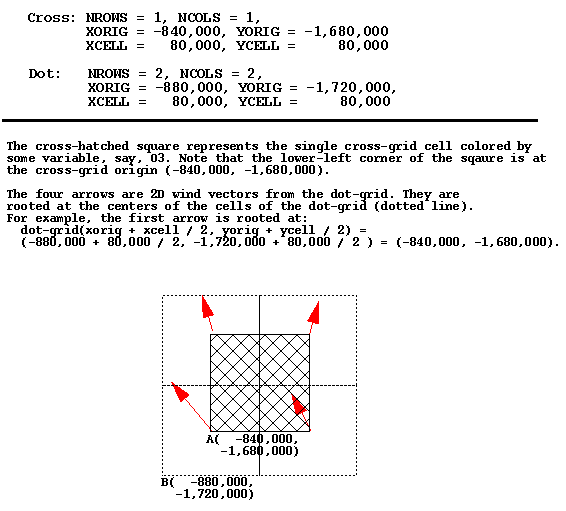
Most geographically oriented UAM-IV input and output files are directly readable by PAVE. These include DIFFBREAK, REGIONTOP, TEMPERATURE, WIND, AIRQUALITY, BOUNDARY, TOPCONC, EMISSIONS, PTSOURCE, AVERAGE, and INSTANT.
Some of the UAM-V input and output files are compatible with the UAM-IV file formats. These files are readily visualized by PAVE because it can obtain all the information it needs from inside the files (i.e. they are "self-describing"). The files in this category are: EMISSIONS, PTSOURCE, BOUNDARY, AIRQUALITY, and the coarse grid AVERAGE and INSTANT files.
However, many UAM-V files have new formats that are not self-describing. PAVE needs additional information in order to read these files, such as the kind of data in the file, the number of rows, columns, and layers in the data, the geographic region covered, etc. The file types that fall into this category are wind, temperature, cloud, water vapor, rain, vertical diffusion, height, fine grid average, and fine grid instant.
In order to display a file of one of these latter types with PAVE, a UAM-V "metafile" must be used. A metafile is an ASCII file that contains the additional information PAVE needs to read and correctly interpret the data. To visualize data in a file that needs a metafile, select the metafile from the PAVE file browser, instead of the file that contains the data. A description of the contents of UAM-V metafiles follows.
The very first line of the metafile MUST be the following:
#! UAMV DESCRIPTION FILEIf PAVE does not find the above string, the file is considered to be of unknown type and an error is returned.Several keywords must be present in the metafile. Each keyword should be on a separate line and followed by a value. Blank lines are permitted. The following keywords are required (and are listed in the recommended order):
UAMV_FILE UAMV_TYPE NCOLS NROWS LEVELS XORG YORG DX or DLON DY or DLAT UTM_ZONE (for UTM-based domains only) FINE_GRID (for UAM-V output files only - not for input meteorology files) TITLEKeyword Descriptions
UAMV_FILE - the name of the file that contains the actual data to be displayed by PAVE. It can be either a full or a relative pathname to the current working directory.
UAMV_TYPE - the type of data in the UAMV_FILE. Valid choices are: Wind, Temp, Cloud, H2O, Rain, Vdif, Height, FineGridAverage, FineGridInstant
NCOLS - number of horizontal columns in the grid
NROWS - number of horizontal rows in the grid
LEVELS - number of vertical layers in the grid
XORG - the x-coordinate of the lower left corner of the grid, in km for UTM-based grids and degrees for latitude-longitude grids
YORG - the y-coordinate of the lower left corner of the grid, in km for UTM-based grids and degrees for latitude-longitude grids
DX - size of the horizontal cell in the x-direction for UTM-based grids (km)
DLON - size of the horizontal cell in x-direction for lat-lon grids (degrees)
DY - size of the horizontal cell in y-direction for UTM-based grids (km)
DLAT - size of the horizontal cell in y-direction for lat-lon grids (degrees)
FINE_GRID - logical variable. Possible values: 0 and 1. If the value is 1, the file represents data on a fine grid, otherwise it is on a coarse grid. For meteorological input files, this value should be set to one only if there is a layer of cells outside the domain specified by { XORG, YORG, NROWS, NCOLS, DX, and DY]}.
TITLE - A title for tile plots. Spaces are allowed.
Example of a UAM-V temperature metafile on the OTAG coarse grid:
#! UAMV DESCRIPTION FILE UAMV_FILE /home/user/tmpr.cc.20jul93.ld.rams1 UAMV_TYPE Temp NCOLS 64 NROWS 63 LEVELS 5 XORG -99.0 YORG 26.0 DLON 0.5 DLAT 0.3333333 FINE_GRID 0 TITLE Coarse Grid Temperature: July 20, 1993Example of a UAM-V fine grid average metafile on the OTAG fine grid:
#! UAMV DESCRIPTION FILE UAMV_FILE /home/trayanov/testpave/avrg.ff.20jul93-93.mc.93basA1 UAMV_TYPE FineGridAverage NCOLS 137 NROWS 110 LEVELS 7 XORG -92.0 YORG 32.0 DLON 0.16666667 DLAT 0.11111111 FINE_GRID 1 TITLE Base Case Fine Grid AverageExample of a UAM-V temperature file on a UTM-based grid:
#! UAMV DESCRIPTION FILE UAMV_FILE /metdata/uamv.t.jun26-28.16km.8.v4 UAMV_TYPE Temp NCOLS 35 NROWS 50 LEVELS 8 XORG 200.0 YORG 4400.0 DX 16.0 DY 16.0 UTM_ZONE 16 FINE_GRID 0 TITLE Coarse Grid Temperature FileCreating metafiles with scriptsIt is relatively straightforward to use a script to create metafiles. Examples of scripts that do this follow. However, the specifics (such as parsing file names to determine file type) depend on the particular application. For PAVE-3.0,There are two examples make_in_metas and make_out_metas that were originally created for the OTAG project; these can be found in ${PAVE_DIR}/bin/
Viewing multiple sequential files as one dataset using chain files
Data from multiple files can be concatenated and displayed as if they were from a single file. This is useful if you wish to animate over sequential data that is stored in multiple files. In order to do this you need to supply a "chain file" - an ASCII file that contains a list of the data files to be concatenated.
The first line of a chain file must be
#! LIST_OF_CHAINED_FILESIf this is not found, PAVE will not recognize that the file is a chain file. A list of full path names to the individual files to be concatenated should follow this line with one filename per line. Note that no blank lines or comment lines are permitted and the files MUST be in the order in which you wish the data to be displayed. The individual files can be one of the following types: netCDF, UAM-IV or UAM-V (regular or meta files).
A script is provided with PAVE to simplify the creation of chain files. The script will currently work only in cases where the files to be chained reside in a single directory. To create a chain file, cd to the directory that contains the files you wish to chain, and type
chain_files name_of_chain_file list_of_files_to_chainFor example:
chain_files avrg.cc.20-30jul93-93.mc.basB avrg.cc.*Limitations: The current version of PAVE does not check the files for consistency (i.e. whether they are of the same type, whether the grid is the same in all the files, or whether the files are listed in the proper sequential order).
Here is an example of a chain file:
#! LIST_OF_CHAINED_FILES /home/trayanov/testpave/rain.cc.20jul93.ai.meta /home/trayanov/testpave/rain.cc.21jul93.ai.meta /home/trayanov/testpave/rain.cc.22jul93.ai.metaReturn To Table of Contents
One of PAVE's most powerful features is its formula capability, which enables you to calculate and visualize derived variables from your datasets "on the fly". For example, you can calculate the ratio of a variable from one file to a variable from another file, and then visualize the ratio. It is easy to load formulas into PAVE using the Add/Delete/Select Formula_popup window, which appears automatically when you start PAVE. The window can also be brought up manually by choosing Edit/Select From Formula List from PAVE's Formulas menu. See Quick PAVE Jumpstart for more details on loading formulas.All PAVE visualizations are generated using one or more formulas. A formula may be very simple. For example, the formula
O3arefers to the variableO3in data set a - which is the first dataset that was loaded into PAVE. (Note that data sets are given sequential letters as they are loaded into PAVE, and are referred to by those letters in PAVE formulas.) An example of a formula to calculate the percent difference inO3between datasets a and b is:(O3a-O3b)*100/(O3b+0.00001).Formulas must be in infix notation, and can contain the following operators, listed in their order of precedence:
Highest 1) abs, sqr, sqrt, exp, log, ln, sin, cos, tan, Precedence sind, cosd, tand, minx, miny, minz, maxx, maxy, maxz, mint, maxt, mean, sum, min, max, 2) ** 3) /, * 4) +, - 5) <, <=, > >= 6) ==, != 7) && Lowest 8) || PrecedenceExplanations of these operations are given below. If you wish to override the default operator precedence, or are uncertain as to which operator will take precedence, you can feel free to use parentheses in your formulas. This will force expressions within the parentheses to be evaluated first.PAVE also has an occasionally used feature that allows you to specify a time step index after a CODEiable name. For example,
O3a:1is the first hour of ozone. So, if you wanted to plot each cell averaged in time over the first six hours of your data, you could enter and plot the following formula:This is cumbersome and it also uses a lot of memory, but it may be useful for you.(O3a:1+O3a:2+O3a:3+O3a:4+O3a:5+O3a:6)/6There is another useful feature of the parser that not many people know about, that enables you to compute and visualize the the rate of change of a variable. For example, the formula
d[O3a]/dtcalculates the change in ozone concentration over time. A limitation of this feature is that the variable between the brackets must be an atomic variable, that is to say, it can not be a formula other than a basic variable from one of your datasets.Formulas may also contain integer or floating point constants, or the following operands which are replaced by PAVE's formula parser to be the constant values noted:
The following operators are binary (they have an operand on both sides of the operator), and usually return an array of data by performing that operation on each cell of the operands' arrays. The only time these operators return a single number is when both operands (ops) are themselves a single number.
- E
- 2.7182818284590452354
- PI
- 3.14159265358979323846
- NROWS
- number of rows in the formula's currently selected domain
- NCOLS
- number of rows in the formula's currently selected domain
- NLEVELS
- number of levels in the formula's currently selected domain
The following operators are boolean binary operators. Boolean operators return either 0 or 1 for each cell of the resulting array of data, or in the case of two operands (ops) that are single numbers, just the single number 0 or 1. You may find these operators useful to "screen out" ranges of your data that are of particular interest. For example, if you are only concerned about the variable O3a when its value exceeds 0.080, you might look at the formula (O3a>0.080)*O3a. If O3a is less than or equal to 0.080, the result of the formula will be set to 0 in that cell. Otherwise, the value of O3a will be used in that cell.
+- Returns the sum of the operands
-- Returns the difference of the operands
*- Returns the product of the operands
/- Returns ratio of the operands
**- Returns the left operand raised to the power of the right operand, calculated using the C math library's
pow()functionThe following operators are unary (they have a single operand on the right side of the operator), and usually return a time-stepped matrix of data by performing that operation on each cell of the operand's array. The only time these operators return a single number is when the operand is itself a single number. The C math library routines called are listed with most of these operators. For further information on these routines, please check your man pages.
<- Returns 1 if the left op is less than the right op,
<=- Returns 1 if the left op is less than or equal to the right op, else 0
>- Returns 1 if the left op is greater than the right op, else 0
>=- Returns 1 if the left op is greater than or equal to the right op, else 0
!=- Returns 1 if the left op is not equal to the right op, else 0
==- Returns 1 if the left op is equal to the right op, else 0
&&- Returns 1 if both ops are non-zero, else 0
||- Returns 1 if either op is non-zero, else 0
The following unary operators return a single number in all cases. Their single operand must follow on the right hand side of the operator. The functionality is listed beside each operator name.
- abs
- fabs(op)
- sqrt
- sqrt(op)
- sqr
- Returns the square of the op
- log
- log10(op)
- exp
- exp(op)
- ln
- log(op)
- sin
- sin(op)
- cos
- cos(op)
- tan
- tan(op)
- sind
- sin(op*(PI/180.0))
- cosd
- cos(op*(PI/180.0))
- tand
- tan(op*(PI/180.0))
where "currently selected domain" includes the currently selected rows, columns, layers, and time steps. So the currently selected domain is bounded by
- mean
- average cell value for all cells in currently selected domain
- sum
- sum of all cell values in currently selected domain
- mint
- time step index with minimum value in currently selected domain
- maxt
- time step index with maximum value in currently selected domain
- minx
Xindex with minimum value in currently selected domain- maxx
Xindex with maximum value in currently selected domain- miny
Yindex with minimum value in currently selected domain- maxy
Yindex with maximum value in currently selected domain- minz
Zindex with minimum value in currently selected domain- maxz
Zindex with maximum value in currently selected domain- nrows
- number of rows in the currently selected domain
- ncols
- number of rows in the currently selected domain
- nlevels
- number of levels in the currently selected domain
(minx,miny,minz,mint)<->(maxx,maxy,maxz,maxt)The unary min and max operators behave a little differently:
- min
- For each cell (i,j,k) in the currently selected domain, this calculates the minimum value for that cell over the currently selected time steps. In other words, the minimum value in cells (i,j,k,tmin..tmax).
- max
- For each cell (i,j,k) in the currently selected domain, this calculates the maximum value for that cell over the currently selected time steps. In other words, the maximum value in cells (i,j,k,tmin..tmax).
NOTE: currently the unary + and - operators [as in -1 or -(x+y)] are not supported, but hopefully these will be added later.
PAVE allows you to easily subset your data by geographic region, layer range, and time range. This section explains the concepts of how PAVE manages this information in its memory space. An understanding of this section should help you with your PAVE usage. To adjust layer ranges, geographic regions of interest (domains), or time step ranges for datasets and formulas, you can use menu items in the Datasets and Formulas menus on PAVE's main interface window. ]Each dataset has some number of layers greater than or equal to one, some number of time steps greater than or equal to one, and some geographic region onto which its grid maps. A geographic region, often referred to as a domain, is defined by the map projection type (Lat/Lon, UTM, Lambert Conformal, etc.), the number of rows and columns in the dataset, and the geographic boundaries of the area on which the grid falls.
For each unique geographic region (or domain) that PAVE learns about by examining the dataset(s) chosen by the user, PAVE keeps a single domain object. Domain objects are where the currently selected geographic region for formulas and datasets are stored in memory. When a domain object is created by PAVE, it defaults to having all of its cells selected, until the user chooses a subregion within that domain. Because PAVE only stores a single domain object for each unique domain that it learns of, there may be numerous datasets and formulas that make use of the same domain object. Therefore, when a user chooses to modify a formula's or a dataset's selected region of interest, the region of interest for all formulas and datasets that refer to the same region and have the same grid dimensions will be affected. Any subsequent plots of any formulas who rely on that domain object will reflect its newly selected geographic region of interest.
Similarly, PAVE uses layers objects to store information about currently selected layer ranges. Each dataset i has some Ni number of layers associated with it, and each formula j has some Nj number of layers associated with it. For each unique number of layers that PAVE learns about, PAVE keeps a single layers object in memory. Therefore, when a user chooses to modify a formula's or a dataset's selected layer range, there may be more than one dataset and more than one formula on which the modified layer range has an effect. When PAVE learns about a new unique number of layers, the layers object that it creates by default has only the first layer selected, until the user modifies the layer range for this layers object.
Time ranges are handled differently than layer ranges and geographic regions of interest. Each dataset has exactly one unique time range object associated with it. That time range object is associated only with that one dataset. Each formula also has exactly one unique time range object associated with it. That time range object is associated only with that one formula. Because a formula may rely on more than one dataset to derive its data, a formula's time step range is always bounded by the time ranges of the datasets it depends on. For example, a formula could have three datasets from which it derives data. Those datasets could have 72, 48, and 24 time steps of data in their currently selected time range objects. In this case, the maximum number of time steps in that formula's time range object could ever have would be 24. Should the user reduce the number of steps in the currently selected time range of any of the three datasets to less than 24, then the maximum number of time steps in that formula's time range object would immediately be reduced accordingly.
Choose Configuration File For New Tile Plots brings up a file browser that allows you to select a file that contains configuation settings for tile plots. Settings can include information such as colors to use, number of colors to use, min and max values for the legend, etc. These settings will be used for all subsequent tile plots, until another configuration file is chosen. The ASCII configuration files can be edited manually, or saved directly from a tile plot. For further information, please see the section on Configuring plots.
Load Dataset List From File brings up a file browser that allows you to select an ASCII file that contains a list of datasets that you would like to visualize with PAVE. Loading in a dataset list from a file will first cause PAVE to remove any currently loaded datasets from PAVE's memory. In this way, dataset names loaded in will then be referenced by letters a, b, c, etc.
Load Formula List From File brings up a file browser that allows you to select an ASCII file that contains a list of formulas that you would like to visualize with PAVE. Note that any formulas loaded in will be verified against the currently loaded datasets. As long as the variables in the formulas match variables in the respective datasets, they will be loaded into PAVE. Otherwise they will be ignored.
Save Dataset List To File allows you to save a list of the currently loaded datasets to an ASCII file. If you want to look at the same set of datasets in many different PAVE sessions, you may find this feature useful. Dataset lists can subsequently be retrieved using the Load Dataset List From File menu item described above.
Save Formula List To File allows you to save a list of the currently loaded formulas to an ASCII file. If you want to look at the same set of formulas in many different PAVE sessions, you may find it useful to use this feature. Formula lists can subsequently be retrieved using the Load Formula List From File menu item described above.
Exit PAVE causes your PAVE session to end.
Edit/Select From Dataset List brings up an "Add/Delete/Select Dataset" window that allows to you load and delete datasets from PAVE's memory. Click on the "Add" button, and an EDSS File Browser should appear (this may take a couple of seconds). You can then browse for datasets on your local machine and on remote machines if your system is properly configured. For more information on using the EDSS File Browser, see Quick Pave Jumpstart.
If you want to browse for files on remote machines, first verify that you've met the requirements discussed in the Requirements for use section of this document. Then click on the large button in the center of the EDSS File Browser that contains information about "Host:", "User:", and "Owner Module:". This brings up a "host selector" window in which you can enter the remote host name (e.g. sequoia.nesc.epa.gov). Clicking on "Select" will cause the file browser to go to your home directory on the remote machine if your system is configured properly. You should then be able to browse for files on that machine.
Datasets selected with the EDSS File Browser are loaded into PAVE
sequentially, and are referenced using the letters a, b,
c, etc.
When a new dataset it loaded into PAVE, it becomes the currently
selected dataset. You can always determine which is the currently
selected dataset by looking at the "Dataset:" line on the main
PAVE window. You can change the currently selected dataset
by simply single-clicking on the desired dataset name in the
"Add/Delete/Select Dataset" window. PAVE's "Species List"
window will then contain the names of the variables contained in the
dataset, each followed by the letter corresponding to the dataset.
Clicking on a dataset name and then clicking on the "Delete" button will remove that dataset from PAVE's memory. Clicking on the "Close" button will close the window.
Select Time Range of Current Dataset brings up a window with two sliders that can be used to crop the currently selected dataset's time range to a smaller time range, which by default is set to the maximum range in the dataset. Cropping, or subselecting, a dataset's time range will affect any plots made using that dataset's variables. The maximum time range that can be used for any of the variables in a plot is specified by these sliders. Please see the section on Spatial and temporal data subsetting for further information on how PAVE stores time ranges.
Select Layer Ranges Matching Current Dataset brings up a window with two sliders that can be used to change the currently selected dataset's layer range to a different layer range. By default, a dataset's layer range is set to be layer 1 (ground level) only. Changing a dataset's layer range will affect any plots made using that dataset's variables, and may also affect plots made using other datasets. The maximum layer range that can be used for any of the variables in a plot is specified by these sliders. Note that there may be multiple datasets and formulas that share the same layer range information. Please see the section on Spatial and temporal data subsetting for further information on how PAVE stores layer ranges.
Select Regions Of Interest Matching Current Dataset brings up a window that can be used to change the currently selected dataset's geographic region of interest. By default, a dataset's geographic region of interest is the entire region referenced by the dataset. This window can be used to select part of this region. Changing a dataset's geographic region of interest will affect any plots made using that dataset's variables, and possibly those of other data sets because there may be multiple datasets and formulas that refer to the same region of interest.
The geographic region of interest window has its own menu. The File menu can be used to save a geographic region of interest to a file, retrieve a region of interest from a file, or to close the window. The Edit menu can be used to easily select all of the grid cells in the window, or to select none of them. Cells can explicitly be toggled on or off by dragging the mouse over the region to be toggled. You may find that selecting a particular region is easier if you resize the window to make it larger. Please see the section on Spatial and temporal data subsetting for further information on how PAVE stores geographic regions of interest.
View Variables In Current Dataset will cause a window to appear that lists the variables in the currently selected dataset, followed by the letter that corresponds to the dataset. You can click on any of the variables to cause that variable to be added to the formula list and become the currently selected formula. The formula can then be plotted using selections from the Graphics menu without any further clicks of the mouse.
Edit/Select From Formula List brings up an "Add/Delete/Select
Formula" window that allows to you add and delete formulas from PAVE's
memory. You can enter a formula using the "Enter New Formula:" typein
widget according to the rules described in the
Using formulas section, then click on the Add button to load it
into PAVE's memory.
When a new formula is loaded into PAVE, it becomes the currently selected formula. You can always determine which is the currently selected formula by looking at the "Formula:" line on the main PAVE control window. You can change the currently selected formula by simply clicking on the desired formula name in the "Add/Delete/Select Formula" window.
Clicking on a formula and then clicking on the "Delete" button will remove that formula from PAVE's memory. Clicking on the "Close" button will close the window.
Select Time Range of Current Formula brings up a window with two sliders that can be used to crop the currently selected formula's time range to a smaller time range. Cropping, or subselecting, a formula's time range will affect any plots made using that formula. The maximum time range that can be used for the formula in a plot is specified by these sliders. Please see the section on Spatial and temporal data subsetting for further information on how PAVE stores time ranges.
Select Layer Ranges Matching Current Formula brings up a window with two sliders that can be used to change the currently selected formula's layer range to a different layer range. By default, a formula's layer range is set to be layer 1 (ground level) only. Changing a formula's layer range will affect any plots made using that formula, and possibly that of other plots too since there may be multiple datasets and formulas that share this same layer range information. Please see the section on Spatial and temporal data subsetting for further information on how PAVE stores layer ranges.
Select Regions Of Interest Matching Current Formula brings up a window that can be used to change the currently selected formula's geographic region of interest. By default, a formula's geographic region of interest is set to be the entire region referenced by the formula . This window can be used to select part of this region. Changing a formula's geographic region of interest will affect any plots made using that formula's variables, and possibly other plots since there may be multiple datasets and formulas that share this same geographic region of interest information.
The geographic region of interest window has its own menu. The File menu can be used to save a geographic region of interest to a file, retrieve a region of interest from a file, or to close the window. The Edit menu can be used to easily select all of the grid cells on the window, or to select none of them. Cells can explicitly be toggled on or off by dragging the mouse over the region to be toggled. You may find that selecting a particular region is easier if you resize the window to make it larger. Please see the section on Spatial and temporal data subsetting for further information on how PAVE stores geographic regions of interest.
Create Tile Plot makes a tile plot of data for the currently selected formula using that formula's selected geographic region of interest, layer range, and time step range. A tile plot has its own menus that can be used to operate on that tile plot and/or its data.
Create Vector Plot makes a vector plot from the formula selected as component 1 and the formula selected as component 2. The formulas selected as the components of the vector must match in geographic region of interest, layer range, and time step range.
Create Vector Tile Plot overlays a vector plot from the formula selected as component 1 and the formula selected as component 2 with a tile plot of a scalar variable. The formulas selected as the components of the vector, and the scalar must match in geographic region of interest, layer range, and time step range.
Create 3D Mesh Plot uses data for the currently selected formula at that formula's selected geographic region of interest, layer range, and time step range, to make a 3D mesh plot.
Create Time Series Line Plot makes a time series line plot using data for the currently selected formula at that formula's selected geographic region of interest, layer range, and time step range. Each time step's data is averaged linearly to produce that time step's data point. WARNING: If multiple layers are selected, PAVE 1.4.2 will show data for only the topmost layer instead of averaging the data over the selected layers.
Create Time Series Bar Plot makes a time series bar plot using data for the currently selected formula at that formula's selected geographic region of interest, layer range, and time step range. Each time step's data is averaged linearly to produce that time step's data point.
Create Scatter Plot makes a scatter plot from the formula selected as component 1 and the formula selected as component 2. The formulas selected as the components of the vector must match in geographic region of interest, layer range, and time step range.
Create N-Hour Average Tile Plot creates a tile plot that contains in the first timestep, the nhour average starting at the first timestep, in the second timestep, the nhour average starting at the second timestep, etc.. First, specify the formula using the menu item Formula, and the menu item Edit/Select from Formula List prior to the selection of the Create N-Hour Average Tile Plot. The title for tile plot generated by the Create N-Hour Average Tile Plot menu is labeled n-hour average, i.e. n-hour average:formula name
Create N-Layer Average Tile Plot creates a tile plot of the nlayer average for the layers selected using the menu item Formulas, then the menu Select Layer Ranges Matching Current Formula. The title for tile plot generated by the Create N-Layer Average Tile Plot menu is labeled n-layer average, i.e. n-layer average:formula name
Animate Tile Plots Synchronously.. animates all currently displayed tile plots in a round-robin fashion. As of Version 1.7, PAVE will synchronize the animation based on the time stamps of the plots, as opposed to the frame number. As a result, files that start at different times can be animated synchronously in a meaningful way.
Set Minimum Frame Time.. brings up a window that allows you to adjust the minimum time between animation frames. This is useful if you have an extremely fast machine on which you want to slow down the animation. The minimum time can be set in 0.1 second increments to any value between 0 and 5 seconds.
Set Tile Plot Cross Section Type brings up a sub-menu that can be used to choose the axis on which PAVE slices the data to make a plot. By default, PAVE does a "Z Cross Section" plot, where every data point on the plot is on the same Z layer. "X Cross Section" and "Y Cross Section" plot types can also be chosen. Subsequent plots will reflect the chosen plot type. Choose X Cross Section when you want to plot a cross section in which the x coordinate is constant, and Y Cross Section when you want the y coordinate to be constant. Note that you will have to adjust your geographic region of interest and the layer range appropriately for the plot type, as PAVE needs to have the geographic region of interest sufficiently cropped for it to be able to resolve which individual plane it is plotting. The other sub menu items are currently grayed out, as PAVE doesn't make use of them. Future versions of PAVE may have these enabled.
Default slices.. is grayed out as PAVE doesn't use this feature.
AVS5 saves the currently selected formula's data to an AVS5 field file, that can then be visualized with the Application Visualization System (AVS) from Advanced Visual Systems, Inc.
netCDF saves the currently selected formula's data to a Models-3 I/O API data file. Data in this format can be visualized later using PAVE, or any other program that reads netCDF/Models-3 I/O API data files. You may find it helpful to save your data this way to perform an extraction from your data, or save the result of a complex formula to prevent having to recalculate the result.
Tabbed ASCII saves the currently selected formula's data to a tab delimited data file suitable for reading into a spreadsheet application such as Excel or Lotus.
Data Explorer and Iris Explorer are grayed out, as this functionality has not yet been added to PAVE.
User Guide first looks on the local disk for the PAVE user guide, for <top level PAVE directory>/doc/pave/index.shtml. If this file does not exist, it attempts to connect to the on-line user guide installed at CEP, which is at https://www.cmascenter.org/pave/documentation/2.3/index.html.
Frequently Asked Questions first looks on the local disk for the PAVE FAQ, for <top level PAVE directory>/doc/pave/Pave.FAQ.html. If this file does not exist, it attempts to connect to the FAQ installed on-line at CEP, which is at https://www.cmascenter.org/pave/documentation/2.3/Pave.FAQ.html.
Models-3 I/O API attempts to use Mosaic to browse the Models-3 I/O API web pages located at https://www.cmascenter.org/ioapi/documentation/all_versions/html/AA.html or https://cjcoats.github.io/ioapi.
"Control..Configure...Tile..." menu item on a tile plot is used to adjust the configuration of a tile plot. You will see a window similar to the following:
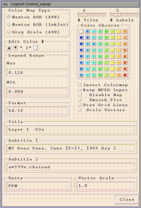
[MPEG FILE NAME].param
[MPEG FILE NAME].mpg.0000.xwd
[MPEG FILE NAME].mpg.0001.xwd
:
[MPEG FILE NAME].mpg.N.xwd [where there are N+1 frames in the MPEG]
Note that the MPEG animation will be generated, regardless of the setting of the "Keep MPEG Input" button.
Parameter files are used by mpeg_encode to generate the MPEG files from a stream of XWD images saved by PAVE. If you want to edit a parameter file and then generate an MPEG "manually" using mpeg_encode, the command line format is:
mpeg_encode <parameter file name>
Using the parameter file below, /home/thorpe/UWINDa2.mpg would be generated from /home/thorpe/UWINDa2.mpg.[0000-0005].xwd.
IQSCALE 6 PQSCALE 6 BQSCALE 6 PSEARCH_ALG LOGARITHMIC BSEARCH_ALG CROSS2 GOP_SIZE 10 SLICES_PER_FRAME 1 PIXEL HALF RANGE 10 PATTERN IBBPBBPBBPBBPBB FORCE_ENCODE_LAST_FRAME BASE_FILE_FORMAT PPM OUTPUT /home/thorpe/UWINDa2.mpg INPUT_CONVERT /pub/storage/edss/framework/EDSSv0.x/IRIX5_mips/bin/OPTIMIZE/publi c_domain/xwdtopnm * | /pub/storage/edss/framework/EDSSv0.x/IRIX5_mips/bin/OPTIMIZE/public_ domain/pnmdepth 255 INPUT_DIR /home/thorpe INPUT UWINDa2.mpg.*.xwd [0000-0005] END_INPUT REFERENCE_FRAME ORIGINAL FORCE_ENCODE_LAST_FRAME
"Control..Configure...Contour..." menu item on the tile plot is used to adjust the configuration of the Contour plots. This option is only active when the tile plot has contours on it. Otherwise, this option is greyed out. Need an image showing what this window looks like
"Control..Configure...VectObs..." menu item on the tile plot is used to adjust the configuration of the Vectors overlayed with Observational data. This option is only active when the tile plot has vectors and observational data on it. Otherwise, this option is greyed out. Need an image showing what this window looks like
"Control..Configure...Title/Subtitle Font..." menu item on the tile plot is used to adjust the font size of Titles and Subtitles of the tile plot. Need an image showing what this window looks like
Saving configuration settings for later use
Tile plot configuration settings can be saved to an ASCII file, edited if desired, and reused in future PAVE sessions. Using a tile plot's a "File...Save Configuration Settings" menu item brings up a file browser that allows you to save the current configuration of the tile plot to an ASCII file suitable for editing. The information saved includes the legend range, the format of the legend labels, the number of labels on the legend, the number of tiles/colors used, the colors themselves, and all of the individual toggle and radio buttons on the Configure.. window. In subsequent PAVE sessions, these configuration settings can be retrieved to affect future tile plots.
An example of the file format used is as follows:
ColorMapType NEWTON_COLORMAP Legend_Max 0.128 Legend_Min 0.000 Legend_Format %4.3f Number_Labels 5 Invert_Colormap 0 Number_Tiles 8 255 0 0 ColorNumber8 255 147 0 ColorNumber7 218 255 0 ColorNumber6 70 255 0 ColorNumber5 0 255 221 ColorNumber4 0 143 255 ColorNumber3 0 95 255 ColorNumber2 223 223 223 ColorNumber1 Save_MPEG_Files 0 Disable_Map 0 Smooth_Plot 1 Draw_Grid_Lines 1 Scale_Vectors 0
Note the following about the format of the configuration file:
NEWTON_COLORMAP [for Newton RGB (AVS)]
JET_COLORMAP [for Newton RGB (InkJet)]
GREY_COLORMAP [for Grey Scale (AVS)]
Configuration files can be loaded into PAVE sessions in two ways - using the user interface or from the command line. PAVE's main window now has a "File... Choose Configuration File For New Tile Plots" menu item, which can be used to select the file. Alternatively, PAVE's command line arguments or standard input stream can accept input of the form -configFile <configuration file name>. Once PAVE loads a configuration file, that information will be used as the default for all subsequent PAVE plots, until another configuration file is specified to PAVE.
To print tile plots, if you are printing to a black and white printer, you should probably choose "Control/Configure" from the plot's menu bar and then experiment with various settings for the colors. You may want to reduce the number of colors in the plot by choosing a smaller number of tiles, or alternatively you may want to choose to use the grayscale colormap. Once you are ready to print the image, just choose the File..Print menu item on the tile plot, and it will be printed on the printer specified by the PRINTER environment variable. If for some reason this doesn't work, then see the sections below on using snapshot and/or xv. These tools will enable you to save a screen captured image to a PostScript file that can then be printed.
To print 3D mesh plots, first decide whether you want to print using black and white or color PostScript. You can then select either the "Black & White PostScript" or the "Color PostScript" button on the 3D mesh plot's "ANIMATING SURFACE" window. Then type in the filename, complete with path name, in the resulting window. Your PostScript will be saved to the chosen file, and then you can issue an lpr command from the Unix command line to print that file.
To print time series line plots or scatter plots,
select the PRINT button on the plot's window. Then type in the filename,
complete with path name, in the resulting window. Your PostScript will be
saved to the chosen file, and then you can issue an lpr command from the Unix
command line to print that file.
To print time series bar plots, see the sections below on using snapshot and/or xv. These tools will enable you to save an screen captured image to a PostScript file that can then be printed.
Tile plots can be saved to an MPEG animation using the File..Save MPEG Animation menu item on the tile plot. Several points to note regarding MPEG animations:
mpeg_play test.mpeg -loop -framerate 5 -quiet
"-loop" keeps it looping. "-quiet" keeps it from printing to stdout (which makes the transition from the last frame to the first much faster). "-framerate 5" slows it down to print 5 frames per second.
Once you have selected the portion of the screen to be captured, use the Save as ... option on the snapshot menu to create an RGB file. To convert the RGB file to black and white PostScript, type
tops your_file.rgb > your_file.ps
If you want a color PostScript file, type
tops your_file.rgb -rgb > your_file.ps
You can then use xpsview your_file.ps to view the new PostScript file. You can then capture another image by placing the mouse pointer over snapshot, pressing and holding the shift button, and then creating a new box with your left mouse button.
For more information on snapshot and tops, see their man pages.
Sun also has a version of snapshot that can capture images. The images can be loaded and viewed with imagetool and then saved to a variety of formats, including postscript. Both snapshot and imagetool have nice user interfaces to help you through the process. See the man pages for more information.
Now left-click the xv controls Save button. Choose
PostScript from the Format menu, and Full
Color or your preferred color choice from the Colors
Menu. Next use the browser to save the PostScript to a file. It is
recommended that you give the file a .ps extension, to indicate its
format.
You can then use xpsview your_file.ps to view the new PostScript file.
xv is available for a variety of UNIX Platforms via anonymous ftp to ftp://www.trilon.com/pub/xv For more information on xv, see the WWW page at http://www.trilon.com/xv
NOTE: xv is a shareware program that you will need to pay $25 to license if you decide to use it. This can be remitted to
US Mail: John Bradley
1053 Floyd Terrace
Bryn Mawr, PA 19010
FAX: (610) 520-2042
Electronic Mail regarding XV should be sent to one of these three addresses:
xv@trilon.com - general XV questions
xvbiz@trilon.com - XV licensing & pricing questions
xvtech@trilon.com - bug reports, technical questions
PAVE has a large number of command line arguments. These can be typed into the PAVE standard input stream (the window where PAVE was launched), or supplied via command line arguments when PAVE is invoked. The command line argument method is often used within scripts written to automate plots for the user. Notes regarding the scripting commands are available below. Several example scripts are provided below. The format for PAVE command line arguments can be determined by typing "pave -usage" at the command line, which produces the following:
usage: pave
[-alias <aliasNAME=definition> (NEW in v2.1)!!!]
[-animateWindows<single|continuous> ]
[-animatedGIF<filename> ]
[-autoContourRange]
[-barplotYformat<format string> ]
[-closeWindow<windowid> ]
[-configFile<configFileName> ]
[-contourRange<minCut> <maxCut> ]
[-copyright ]
[-crossSectionType X|Y|Z ]
[-display <display> ]
[ -drawGridLabels ON|OFF (NEW in v2.3!!!) ]
[ -drawLegend ON|OFF (NEW in v2.3!!!) ]
[ -drawMinMax ON|OFF (NEW in v2.3!!!) ]
[ -drawTimeStamp ON|OFF (NEW in v2.3!!!) ]
[ -drawTiles ON|OFF (NEW in v2.3!!!) ]
[-f [<host>:]<filename> ]
[-fulldomain ]
[-g <tile|line|mesh|bar> ]
[-gtype <tile|line|mesh|bar> ]
[-height <tile plot height in pixels> ]
[-help|fullhelp|usage ]
[ -imageMagickArgs 'args' (NEW in v2.3!!!) ]
[-kedamode]
[-legendBins "<bin0,bin1,...,bin_n>" ]
[-level <level> ]
[-levelRange <levelMax> <levelMin> ]
[-mapCounties]
[-mapName "<pathname>/<mapFileName>" ]
[-minMaxModelObs <col> <row> <radius> <formula1> <formula2> ]
[ -minMaxObs <col> <row> <radius> <formula1> <formula2> ]
[ -multivarNcf <formulaList> <varList> <fileName>" ]
[ -multitime <Nformulas> "<formula1>" ... "<formulaN>" ]
[ -nHourAverage <nhours> ]
[ -nHourSum <nhours> ]
[ -nLayerAverage ]
[ -nLayerSum ]
[ -obs <formula> ]
[ -obsidtable <filename> ]
[ -obsSize <size> ]
[ -obsThick<size> ]
[ -obsTimeSeries]
[ -onlyDrawLegend (NEW in v2.3!!!) ]
[ -preClip <llLat> <llLon> <urLat> <urLon> ]
[ -printAlias ]
[ -quit|exit ]
[ -raiseWindow <windowid> ]
[ -s "<formula>" ]
[ -save2ascii <filename> ]
[ -save2d <imagetype> <filename> ]
[ -save2ncf <filename> ]
[ -saveImage "<image type>" <file name> ]
[ -scatter "<formula1>" "<formula2>" ]
[ -showWindow <windowId> <timestep> ]
[ -subDomain <xmin> <ymin> <xmax> <ymax> ]
[ -subTitle1"<sub title 1 string>" ]
[ -subTitle2"<sub title 2 string>" ]
[ -subTitleFont <fontSize> ]
[ -system "<unix command>" ]
[ -tfinal <final time step> ]
[ -tileYlabelsOnRight ]
[ -tinit <initial time step> ]
[ -titleFont <fontSize> ]
[ -titleString "<title string>" ]
[ -ts <time step> ]
[ -tzoffset <Timezone offset> ]
[ -tzset <in Timezone> <out Timezone ]
[ -unalias <aliasname> ]
[ -unitString "<unit string>" ]
[ -vectobs <formula> <formula> ]
[ -vector "<U>" "<V>"]
[ -vectorPlotEvery "<number>"]
[ -vectorScale "<scale factor>"]
[ -vectorTile "<formula>" "<U>" "<V>"]
[ -version ]
[ -width <tile plot width in pixels> ]
[ -windowid ]
-alias <aliasNAME=definition>The user can define an alias by
creating a definition using variable names and derived variables that are calculated using the
mathematical operators described in the PAVE Using Formulas documentation. The alias definition
does not include the dataset name. The alias is treated like any other formula once the alias
definition and the dataset to which it should be applied to is specified. If you need to redefine
an alias definition, you must first use the -unalias command. The alias definitions are saved
to a .pave.alias file in your home directory. Pave uses this type of optional file in your home
directory to maintain a snapshot of the current aliases being used within pave. The following
warning will be reported if an alias is defined more than once: WARNING: Alias <aliasname>
already defined, new definition ignored. The user is also responsible for not making circular
references. If the aliasname is contained within its definition, then PAVE will crash. Use the
-printAlias command to view what aliases are already defined.
An example script to create a tile plot of a user specified alias:
#!/bin/csh -f
setenv DATA_DIR /env/data/trayanov
setenv FILE1 CHEM_CONC_3D_G1.200021512
pave \
-f ${DATA_DIR}/${FILE1} \
-alias NTOT=NO+NO2+NO3+N2O5+HONO+HNO3+HNO4 \
-s NTOTa \
-gtype tile \
-unalias NTOT
-animatedGIF<filename>creates an animated GIF by doing an x window dump
of each of the timesteps in the tile plot then converting them to gif images.
While the animaged GIF is being created by PAVE, the user must not bring up other windows.
If other windows cover the tile plot while the x window dumps are being performed,
then the animated gif will incorrectly include these contents of these windows rather than
the tile plot window. After the x window dumps are completed, a program called convert
creates the animated gif. If there are many timesteps in the dataset, there will be a
slight delay before the user is again given control of the pave gui, after the convert
program has finished running.-autoContourRange tells PAVE to no longer use the contour range supplied by a previous -contourRange command, but rather use the default range that is set by the range of the data for each plot.
-barplotYformat"<format string>" can be used to adjust the format used by sprintf() to draw the y axis labels on bar plots. The default format is %g. Please see a C reference book or the man pages on sprintf() for specifics on usable formats for float variables. NOTE: This option does not work on the IBM platform.
-closeWindow"<windowid>" closes the window with the specified X window ID
-configFile <configFileName> specifies a configuration file for PAVE to use for configuring subsequent tile plots. Please see the Configuring plots section for more information on configuration files.
-contourRange <minCut> <maxCut> sets the contour minimum and maximum cutoffs to use for tile plots. By default, the contour range is set by the range of the data for each plot.
-copyright prints out copyright information on PAVE itself and all of the third party public domain applications that it uses. PAVE will not start until the user scrolls throught the copyright information by hitting rertun or the space key in PAVE's standard input window
-crossSectionType X|Y|Z sets the graphics cross section type for subsequent plots to the slice type specified.
-drawGridLabels ON|OFF
-drawLegend ON|OFF
-drawMinMax ON|OFF
-drawTimeStamp ON|OFF
-drawTiles ON|OFF were added in version 2.3,
along with other command line arguments that control
whether various parts of tile plots are drawn. You may find this useful
when placing PAVE outputs in other documents. Note that the syntax
to prevent the drawing of titles was already in earlier versions of
PAVE - just give a string of spaces as the argument for the title
command line arguments (e.g. -titleString " " -subTitle 1 " "
-subTitle2 " "). Also see -onlyDrawLegend.
-f [<host>:]<pathname/filename> tells PAVE
to load in this dataset and make it the currently selected dataset.
Each time you enter a new sequence of script commands with -f options in
it, PAVE will remove any previously loaded datasets from its memory,
and begin denoting the new dataset(s) with the letters a, b, etc. So if
you want to load in a number of datasets using the -f option with PAVE's
standard input, be sure to have all the -f <file>
pairs on one line. If you are using a script, it is fine to leave
-f <file> commands on separate lines that end with
backslashes.
-fulldomain sets the PAVE domain matching the currently selected dataset to be completely selected. The currently selected dataset is usually the most recently added dataset, unless you have modified it by selecting another dataset using the user interface.
-gtype <tile|line|mesh|bar> instructs PAVE to create a plot using the specified type and the currently selected formula's data.
-help | -fullhelp | -usage display the information on all the command line arguments available. Each of these three versions perform the identical function.
-imageMagickArgs 'args' was added in version 2.3. When used, this command line argument will pass the contents of args to the convert program that is called when images are converted from X-window dumps to other image formats. For more information on the command line arguments for convert, see the ImageMagick documentation (available from http://www.imagemagick.org).
-legendBins "<bin0,bin1,...,bin_n>" causes PAVE to use the specified numbers as breaks between colors on subsequent plots. The value of this argument is a comma separated list of numbers. For example, -legendBins &qu;1,10,100,1000&qu; will cause plots to be created with three colors that correspond to values of 1-10, 10-100, and 100-1000. To go back to the default method for determining breaks between bins, enter -legendBins DEFAULT.-level <level> sets the level range of all formulas to the single level specified.
-levelRange <levelMax> <levelMin> sets the level range of all formulas to the range specified.
-mapCounties causes PAVE to use the county map for subsequently created plots. If the PAVE_DISTINCT_STATE_COUNTIES environment variable is set, the state and county lines will be drawn with different colors.
-mapName "<pathname>/<mapFileName>" causes PAVE to use the supplied map name instead of the default map for tile plots. The default map is <top level PAVE directory>/$EDSS_ENV/bin/OPTIMIZE/maps/OUTLUSAM, which is a medium resolution state outline map.
-minmaxobs <col> <row> <radius> <formula1> <formula2>
<formula1> = "MODEL_VAR", <formula2> = "OBS_VAR"
creates a plot of the Min and Max of the Model Variable computed over an
area defined with a radius (number of cells) and center cell (Column, Row).
The Observational variable defined at cell (Column, Row) is also displayed
-minmaxmodelobs <col> <row> <radius> <formula1> <formula2>
<formula1> = "MODEL_VAR", <formula2> = "OBS_VAR"
creates a plot of the Min and Max of the Model Variable computed over an
area defined with a radius (number of cells) and center cell (Column, Row).
The Observational variable defined at cell (Column, Row) and the Model Variable
defined at cell (Column, Row) are also displayed
-multivarNcf <formulaList> <varList> <fileName>"export multiple netCDF variables to a file name. The fileName must currently be listed using the full path name.
An example script to create export multiple formulas to a netCDF file:
#!/bin/csh -f
setenv DATA_DIR /env/data/trayanov
setenv FILE1 CHEM_CONC_3D_G1.200021512
pave \
-f ${DATA_DIR}/${FILE1} \
-alias NTOT=NO+NO2+NO3+N2O5+HONO+HNO3+HNO4 \
-s NTOTa \
-gtype tile \
-s NOa \
-s NO2a \
-multivarNCF "NTOTa,NOa,NO2a" "NTOT,NO,NO2" $EDSS_ROOT/data/frmwk/pave/multiNTOT.ncf \
-unalias NTOT
-multitime <Nformulas> "<formula1> .. "<formulaN>"
creates a time series line plot showing each of the Nformulas formulas
with its own line.
Note that Nformulas must be between 1 and 8, and that all the formulas for
the plot should have already been loaded into PAVE,
and they are case sensitive.-NhourAverage <nhours>creates a tile plot that contains in the first timestep, the nhour average starting at the first timestep, in the second timestep, the nhour average starting at the second timestep, etc.. The formula specified using -s <formula> prior to the -NhourAverage option is displayed in the tile plot. The title for tile plot generated by the -NhourAverage option is labeled n-hour average, i.e. n-hour average:formula name
-NhourSum <nhours>creates a tile plot that contains in the first timestep, the nhour sum starting at the first timestep, in the second timestep, the nhour sum starting at the second timestep, etc.. The formula specified using -s <formula> prior to the -NhourSum option is displayed in the tile plot. The title for tile plot generated by the -NhourSum option is labeled n-hour sum, i.e. n-hour sum:formula name
-NlayerAverage <nlayers>creates a tile plot of the nlayer average for the layers selected using the -levelRange option
-NlayerSum <nlayers>creates a tile plot of the nlayer sum for the layers selected using the -levelRange option
-obs <formula> plot standard AIRS AMP350 observational data overlayed on a gridded tile plot with model variable data. The program AIRS2M3 is provided to convert the standard AIRS AMP350 observational data format to the Models-3 I/O API format that PAVE requires.
-obsidtable <filename> An example lookup table for converting AIRS AMP350 numeric observation station ids to text names is available with the airs.lookup file provided with the PAVE 2.1b release. The required format for the file is a two column, space delimited ascii file, the entries in the first column contain the AIRS AMP350 numeric observation station ids that can be unquoted or quoted, the entries for the second column contain the cooresponding name e.g. "CITY, COUNTY, STATE" that can either be a tightly packed string, or a quoted string. If PAVE finds a match between the AIRS AMP350 numeric observation station id provided in the gridded observational data file, and a numeric entry in first column of the airs.lookup file, then it will replace the AIRS AMP350 numeric observation station id with the cooresponding name provided in the second column of the airs.lookup file. If no match is found, the AIRS AMP350 numeric observation station id will be preserved
-obsSize <size> specify the size (an integer number) of the diamond shaped observational data point markers. Specify this option after the -obs option
-obsThick <size> specify the thickness (an integer number) of the diamond shaped observational data point markers. Specify this option after the -obs option
-obsTimeSeries creates a time series plot displaying the observations and average observations versus time. The labels currently list the numeric observation id. To focus in on specific counties or regions use the -subdomain option.
An example script application:
#!/bin/csh -f
setenv DATA_DIR $EDSS_ROOT/data/frmwk/pave/
setenv FILE1 O38.ids.obs_on
setenv FILE2 SM_b1on_cc3_g0.l1.O3.8hr.2hours
pave \
-f ${DATA_DIR}/${FILE1} -s O38_OBSa \
-f ${DATA_DIR}/${FILE2} -s O3b \
-subdomain 26 3 72 50 \
-gtype tile -obs O38_OBSa \
-obsSize 6
-obsThick 3
-obstimeseries
-onlyDrawLegend ON|OFF was added in version 2.3. If this is set to ON, you'll get a plot for which only the legend is drawn. This is useful if you want to place the legend in another document. You can crop this plot when exporting images using scripts by using the -imageMagickArgs command line option.
-preClip <llLat> <llLon> <urLat> <urLon> will cause PAVE to use a "pre-clip" map region bounded by the supplied lat/lon coordinates. These arguments can be used to access PAVE's world map over a region outside of North America. For further information on how to use the world map, please see the PAVE FAQ located at Pave.FAQ.html#WorldMap.-printAlias prints existing alias definitions
-quit | -exit ends the PAVE session.
-raiseWindow "<windowid>" raises the window with the specified X window ID (i.e. brings it to the front)
-s "<formula>" loads the specified formula into PAVE's memory, and makes it the currently selected formula.
-save2d <imagetype> <filename> used to save a timeseries plot to an image file. Supported imagetypes include GIF, RGB, XWD, MPEG, or PS. The environment variable GRAPH2DCFG is used to specify the graph2d.blt BLT configuration file. An example graph2d.blt BLT configuration file is provided with the PAVE 2.1b release.
-save2ascii <filename>export data to a tab delimited data file suitable for reading into a spreadsheet application such as Excel or Lotus
-save2ncf <filename>export data to a Models-3 I/O API netCDF formatted file. Data in this format can be visualized later using PAVE, or any other program that reads Models-3 I/O API netcdf data files.
-saveImage <image type> <file name> saves the most recently created tile plot, The image type can be RGB, XWD, GIF, MPEG, or PS. Note: this may cause PAVE to crash if the most recently created tile plot has been closed.
This option can also be used to generate a stream of images from a tile plot, one for each time step of data associated with that tile plot. This can be done either through a command line option (-saveImage) or through the standard Motif user interface that comes with a tile plot's window. By supplying a file name with % format characters suitable by the C Language's printf() routine, PAVE is notified that a stream of images should be saved rather than a single image. The printf % format characters are used to generate the individual file name for each time step of data.
For example, if a user needs to:
The following script would do the job:
#!/bin/csh setenv SMOOTH_PLOTS 1 pave \ -f /home/thorpe/example_data/399test.wind.bin.d1 \ -s UWINDa \ -contourRange -4000 4000 \ -tinit 0 -tfinal 12 -gtype tile -saveImage GIF /tmp/test%02d.gif \ -quit-scatter "<formula1>" "<formula2>" creates a scatter plot using the two formulas specified. Note that the formulas for the two components should have already been loaded into PAVE, and they are case sensitive.
-showWindow <windowId> <timestep> Sets the time step of the window with the specified X-window ID to the specified timestep. The timestep must be within the allowable range for the dataset.
-subdomain <xmin> <ymin> <xmax> <ymax> sets the PAVE domain matching the currently selected dataset to the bounding box specified by its arguments. The currently selected dataset is usually the most recently added dataset, unless you have modified it by selecting another dataset using the user interface. It is often handy to type -subdomain commands into PAVE's standard input if you are trying to select a very precise subdomain (such as that needed for a vertical cross-section plot).
-subTitle1 and -subTitle2 allow the user to control a tile or vector plot's subtitles if desired. Subsequent plots will use the default subtitles, unless these arguments are used again.
-subTitleFont"<fontSize>"allow the user to control the font size of the subtitle of a pave plot.
-system "<unix command>" sends the specified command to the UNIX command line using C language's system() routine.
-tfinal <final time step> sets the last time step for each formula's time step range to the specified step number, where the first step number is denoted by 0.
-tileYlabelsOnRight causes the tile plot's Y axis labels to appear on the right hand side of the plot, rather than the default of the left hand side.
-tinit <initial time step> sets the first time step for each formula's time step range to the specified step number, where the first step number is denoted by 0.
-titleFont"<fontSize>"allow the user to control the font size of the title of a pave plot.
-titleString "<title string>" sets the title for the next plot made to the specified title. Subsequent plots will use the default PAVE title, unless this argument is used again.
-ts <time step> sets the selected time step for each formula in PAVE's memory to the specified step number, where the first step number is denoted by 0.
-tzoffset <Timezone offset>changes the time by the specified offset value, use a +/- integer value. This option is specified after the -gtype tile option
-tzset <in Timezone> <out Timezone> The <out Timezone> will be
displayed in parenthesis next to the time on the tile plot. The correct specification
of the <in Timezone> can not be verified by PAVE. It is the responsibility
of the user that the timezone specified as <in Timezone> matches the native timezone
of the input data.
Currently Supported Timezones, (use the acronym in all caps)
GMT, Greenwich Mean Time; CET, Central European Time; EET, Eastern European Time
AST, Atlantic Standard Time; EST, Eastern Standard Time; CST, Central Standard Time
MST, Mountain Standard Time; PST, Pacific Standard Time; YST, Yukon Standard Time
HST, Hawaii Standard Time
-width and -height allow the user to control a tile plot's width and height in pixels. All subsequent plots will use the supplied value for height/width, until a non-positive value is supplied as a subsequent argument. At that point PAVE's default height/width will be used.
-unalias <aliasname>used to undefine an alias
-unitString can be used to override the default unit label used for tile plots. The default value comes from the dataset(s) themselves.
-vector "<U>" "<V>" creates a vector plot with U as the left to right vector component and V as the down to up vector component. There are no background colors used for this type of plot. Note that the formulas for the two components should have already been loaded into PAVE, and they are case sensitive.
-vectobs <formula> <formula> plot wind vector observational data overlayed on a vector tile plot of model wind vector data.
An example script application:
#!/bin/csh -f
setenv DATA_DIR1 $EDSS_ROOT/data/frmwk/pave/
setenv FILE1 mm5_winds.smraq.lyr_1.avg.full
setenv FILE2 TDL_OBS.avg.smraq
setenv PAVE_VECTOBS_COLOR blue
pave \
-f ${DATA_DIR1}/${FILE1} \
-s U_AVGa -gtype tile\
-s V_AVGa \
-f ${DATA_DIR1}/${FILE2} \
-s U_OBSb \
-s V_OBSb \
-vectorScale 15 \
-vectortile U_AVGa U_AVGa V_AVGa \
-vectobs U_OBSb V_OBSb
-vectorPlotEvery <number> causes PAVE to plot every n vectors where n is equal to the number specifed (n must be an integer).
-vectorScale <scale factor> uses scale (an integer number) to adjust the length of non-uniform vectors. This needs to be specified before the -vectortile option
-vectorTile "<formula>" "<U>" "<V>" creates a vector plot with the result of "formula" as the background tiles, U as the left to right vector component, and V as the down to up vector component. Note that the formulas for the three components should have already been loaded into PAVE, and they are case sensitive.
-version prints out information about the PAVE version being used on the standard output stream, that is usually sent to the window PAVE was launched in.
-windowidPrint the X-window ID of the most recently created window.
Here are a few notes to keep in mind regarding the above scripting commands:
compare.pave: #!/bin/csh -f setenv DATA_DIR /ep/otag/jul93/output setenv SCEN1 07bas1B setenv SCEN2 93snsDuc2 pave \ -f $DATA_DIR/$SCEN1/bin/avrg.cc.22jul93-07.mc.$SCEN1 \ -f $DATA_DIR/$SCEN2/bin/avrg.cc.22jul93-93.mc.$SCEN2 \ -configFile /ep/otag/jul93/output/base_o3.cfg \ -unitString "PPM" \ -titleString "$SCEN1 Ozone" \ -s O3a -tinit 12 -tfinal 17 -gtype tile \ -titleString "$SCEN2 Max Ozone" \ -s max\(O3b\) -tinit 12 -tfinal 18 -gtype tile \ -configFile /ep/otag/jul93/output/compare_o3.cfg \ -titleString "$SCEN1 Ozone - $SCEN2 Ozone" \ -s O3a-O3b -gtype tileThis script compares ozone concentrations in coarse grid average files for two scenarios and draws three plots. In the first few lines some environment variables are set to help find data in a generic fashion.
pave \ -f $DATA_DIR/$SCEN1/bin/avrg.cc.22jul93-07.mc.$SCEN1 \ -f $DATA_DIR/$SCEN2/bin/avrg.cc.22jul93-93.mc.$SCEN2 \Here pave is started and two files are loaded (coarse grid average files for a day of interest).
-configFile /ep/otag/jul93/output/base_o3.cfg \In the next line a configuration file is defined. This contains preferences for "base ozone plots" (i.e. plots of ozone concentrations, not differences). The contents of the file are:
base_o3.cfg: ColorMapType NEW in v2.1TON_COLORMAP Legend_Max 0.160 Legend_Min 0.000 Legend_Format %4.3f Number_Labels 7 Invert_Colormap 0 Number_Tiles 8 Save_MPEG_Files 0 Disable_Map 0 Smooth_Plot 0 Draw_Grid_Lines 0 Scale_Vectors 0Here the standard colormap is being used, max and min values are set, and the number of labels is changed to 7. The rest of the values are defaults - they do not need to be in the configuration file. You can create a configuration file by configuring a plot as you want it and choosing Save Configuration Settings from the file menu of the plot.
-unitString "PPM" \ -titleString "$SCEN1 Ozone" \ -s O3a -tinit 12 -tfinal 17 -gtype tile \In these lines, setup is being done up to plot ozone for the first data set. The units and title are defined, the formula to plot is chosen, and in this case only hours 12-17 will be plotted. Finally, a tile plot is created due to the keywords "-gtype tile". NOTE: the \'s at the ends of the lines are continuation characters - don't forget these when you're using PAVE from a C-shell script!
-titleString "$SCEN2 Max Ozone" \ -s max\(O3b\) -tinit 12 -tfinal 18 -gtype tile \In these lines a plot of the maximum ozone in dataset b is created by using the max operator. The \'s around the ()s are required because C-shell will try to interpret the ()s otherwise. Note that by using tinit and tfinal, the maximum is for those hours only, but the resulting file will contain multiple time steps with the same value for each one.
-configFile /ep/otag/jul93/output/compare_o3.cfg \ -titleString "$SCEN1 Ozone - $SCEN2 Ozone" \ -s O3a-O3b -gtype tileIn the last three lines a difference plot is drawn with different preferences as defined by a new configuration file. The rest is similar to the other plots. Here is the configuration file for the difference plot:
compare_o3.cfg: ColorMapType JET_COLORMAP Legend_Max 0.032 Legend_Min -0.032 Legend_Format %4.3f Number_Labels 9 Invert_Colormap 0 Number_Tiles 9Huge example of command line usage:
Here is a huge example of invoking PAVE with command line arguments. Almost all available command line arguments are used by this example. These types of invocations typically are used from within a script that can be run over and over. Of particular note are the vectorTile, vector, scatter, and multitime options, that are only available through command line or via stdin (but NOT via the PAVE user interface).
pave \ -f /pub/storage/edss/framework/EDSSv0.2/example_data/399a.uam.emis.d1 \ -f /200p_scratch/olerud/399a/uamdata/399a.wind.bin.d1 \ -s "sqrt(UWINDb*UWINDb+VWINDb*VWINDb)" \ -s UWINDb \ -contourRange -3.0 3.0 \ -titleString "Ground Level U Wind Speed" \ -gtype tile \ -s VWINDb \ -contourRange -3.0 3.0 \ -titleString "Ground Level V Wind Speed" \ -gtype tile \ -autoContourRange \ -titleString "Ground Level Winds (Bckgnd=Speed)" \ -vectorTile "sqrt(UWINDb*UWINDb+VWINDb*VWINDb)" "UWINDb" "VWINDb" \ -vector "UWINDb" "VWINDb" \ -s "NO2a+NOa" \ -titleString "Ground Level NOx Emissions" \ -gtype tile \ -titleString "Ground Level NOx Emissions" \ -gtype mesh \ -titleString "Ground Level NOx Emissions" \ -gtype line \ -titleString "Ground Level NOx Emissions" \ -gtype bar \ -scatter "UWINDb" "VWINDb" \ -f /200p_scratch/rmm/eastUS_em1_g0 \ -s "NOc+NO2c" \ -contourRange 0 200 \ -subdomain 26 24 37 34 \ -level 1 \ -titleString "Ground Level NOx" \ -gtype tile \ -level 5 \ -titleString "Level 5 NOx" \ -gtype tile \ -levelRange 1 5 \ -contourRange 0 200 \ -subdomain 31 24 31 34 \ -crossSectionType X \ -titleString "First 15 Levels NOx at Col 31" \ -gtype tile \ -contourRange 0 200 \ -subdomain 26 30 37 30 \ -crossSectionType Y \ -titleString "First 15 Levels NOx at Row 30" \ -gtype tile \ -s "NOc" \ -s "NO2c" \ -multitime 2 NOc NO2c
setenv PAVE_EXE <some pathname/executable name> will cause the pave script to use that version of the binary executable when launching PAVE.
setenv PAVE_DEBUG <ON|OFF> in interpreted by the pave script in versions 2.3 or later. If PAVE_DEBUG is set to ON (default is OFF), then the script prints some debugging information about the various paths used when PAVE is executed. This is useful if you are having problems getting PAVE or one of its components to work. You can turn this on by doing setenv PAVE_DEBUG ON before running PAVE.
setenv KILL_PROCESS_GROUP <ON|OFF> is interpreted by the pave script in version 2.3 or later. If KILL_PROCESS_GROUP is set to ON (which is the default behavior in the pave script), then all processes started by PAVE during the session (e.g. time series plots) will be killed when PAVE exits. However, we have found that on Linux, if PAVE is being run from a script the parent script is also killed. Therefore, you may wish to do setenv KILL_PROCESS_GROUP OFF before running PAVE on Linux - especially if you are using scripts.
setenv LOCAL_FILES_ONLY <ON|OFF> is interpreted by the pave script in versions 2.3 or later. If LOCAL_FILES_ONLY is set to ON (the default value is OFF), PAVE will execute without running the software bus. This is useful when running from scripts because you can run multiple instances of PAVE from the same user account. A limitation is that when LOCAL_FILES_ONLY is ON and you are running PAVE in interactive mode, we have been unable to get the local file browser to communicate back to PAVE properly when new files are added. However, files that were added in prior sessions or via the command line may be analyzed.
setenv DENOMINATOR_CUTOFF <some floating point number> will cause PAVE to workaround divide by zero conditions. If this environment variable is set, then for each division, if the denominator is less than or equal to DENOMINATOR_CUTOFF's value, then the result of the divide is set to 0
setenv DISABLE_MAPS 1 will cause PAVE to disable map drawing by default on tile plots
setenv DRAW_GRID_LINES 1 will cause grid lines to be drawn by default on tile plots
setenv ELLISPOID ellipsoidName will cause PAVE to use a
non-default ellipsoid when drawing maps. The valid values for
ellipsoidName are:
MERIT_1983, SGS_85, GRS_1980, IAU_1976, CLARKE_1866, CLARKE_1880
ENGELIS_1985, EVEREST_1969, WGS_60, WGS_66, WGS_72, and WGS_84.
See also the entries on this page for SPHERICAL_EARTH and GRS80.
setenv EDSS_MAPDIR <directory_name> will override PAVE's <top level PAVE directory>/$EDSS_ENV/bin/OPTIMIZE/maps dir, which is where PAVE looks for its maps by default.
setenv GRS80 will cause PAVE to assume the earth's ellipsoid is the one defined by the GRS80 specifications. The defalt ellipsoid is MERIT_1983. See also SPHERICAL_EARTH and ELLIPSOID on this page.
setenv LEGEND_BINS &qu;1,10,100,1000&qu; for example will cause plots to be created with three colors that correspond to values of 1-10, 10-100, and 100-1000. The general format for the value of this environment variable is a comma separated list of numbers.
setenv NO_AUTHOR_STRING will cause PAVE not to put PAVE by MCNC on plots.
setenv PAVE_EXPORT_VARNAME <some alphanumeric string> can be used to override the default variable name of "VAR" when exporting data to netCDF files from PAVE.
setenv PAVE_DISTINCT_STATE_COUNTIES will cause PAVE to display state and county lines in different colors (gray / black).
setenv PAVE_VECTOBS_COLOR <colorName> will cause PAVE to draw the observational vectors with the specified color. Potential colors and RGB values are usually found in /usr/lib/X11/rgb.txt for non-Suns or /usr/openwin/lib/X11/rgb.txt on Suns.
setenv PRECLIP_LLLAT <0>
setenv PRECLIP_LLLON <-180>
setenv PRECLIP_URLAT <85>
setenv PRECLIP_URLON <70> will cause PAVE
to use a "pre-clip" map region bounded by the lat/lon coordinate
pairs (-180,0) and (70,85). These environment variables can be
used to access PAVE's world map over a region outside of North
America.
For further information on how to use the world map, please see the
PAVE FAQ located at
Pave.FAQ.html#WorldMap.
setenv PRINTER 200p_lw will cause tile plots to be sent to 200p_lw when printed
setenv SBUS_EXEC_RC <rc file name> can be used to override the default file ~/.edss_exec_rc, which is used to locate various EDSS subsystems
setenv SBUS_RLOGIN_RC <rc file name> can be used to override the default file ~/.edss_rlogin_rc, which is used for the userids to use for remote data access. You will only need to worry about this if your remote account's login name is not the same as your local login name.
setenv SCALE_VECTORS 1 will cause vector length to be scaled by their magnitude by default on vector plots
setenv SMOOTH_PLOTS 1 will cause PAVE to smoothly interpolate pixels on tile plots by default
setenv TENTHS_SECS_BETWEEN_FRAMES 10 will cause a minimum of 1 wall clock second between animation frames. Units are tenths of a second, allowable range is 0..50
setenv PAVE_COORD "GDTYP P_ALP P_BET P_GAM XCENT YCENT"
<some real number> can be used to define the projection
parameters. CAMx or UAM files in the Lambert conformal projection are
not self-contained, as the lambert parameters are not specified in the file header.
To inform PAVE that the CAMx or UAM file has the conformal projection,
specify the values using the PAVE_COORD environment variable.
GDTYP,P_ALP,P_BET,P_GAM,XCENT,YCENT are defined in the the IOAPI documentation
http://www.baronams.com/products/ioapi/GRIDS.html
An example for a lambert conformal grid with a reference lat/lon of (40N,100W)
and latitudes of two parallels, 60N and 30N. Note XCENT is typically equal to
P_GAM.
setenv PAVE_COORD "2 30 60 -100 -100 40"
setenv [ P_ALP|P_BET|P_GAM|XCENT|YCENT|XORIG|YORIG|XCELL|YCELL ]
<some real number> can be used to supersede any of the respective
netCDF header values. Before
creating a PAVE plot, the environment variables will be checked and
appropriate fields replaced.
setenv SPHERICAL_EARTH radius will cause PAVE to treat the earth as a sphere with the specified radius when drawing maps. If you set the value of radius to 1, it will use the default radius of 6370997 meters. Note that the default ellipsoid is MERIT_1983. See also the entries on this page for GRS80 and ELLIPSOID.
setenv UAM_MISSING_VALUE <some floating point number> can be used to define a value that corresponds to missing data for UAM format files. If this environment variable is not set, the value defaults to -999.0.
setenv USE_LOCAL_VISD will cause PAVE to read all files on the local computer with the visd instead of as local files. This is useful if a file to be visualized on a 64 bit capable SGI is larger than 2 GB. This should only be used at times when very large files are being visualized because it is slower than reading files locally.
setenv VECTOR_COLOR <colorName> will cause PAVE to draw the vectors with the specified color. Potential colors and RGB values are usually found in /usr/lib/X11/rgb.txt for non-Suns or /usr/openwin/lib/X11/rgb.txt on Suns.
setenv ADD2DHLINE <some floating point number> used to define a horizontal line to a 2-D plot such as a timeseries plot.
setenv GRAPH2DCFG <blt filename> This specifies a BLT configuration file that can be modified to configure 2D plots. All 2D plotting in PAVE is generated using the BLT library, which is an extension to the (Tcl)/Tk library.
setenv HOST <machine name or ip address> used to specify a remote hostname from which to obtain a file, used in the -f option.
You must have your input datasets in Models-3 I/O API (netCDF) UAM-IV, or UAM-V formatted data files.
PAVE can be displayed on most X displays with at least 8 bits of color. Using X windows software on a PC or Macintosh, you should be able to to display PAVE output from any of the above Unix platforms.
(OPTIONAL - READ THE REST OF THIS SECTION THIS ONLY IF YOU WANT TO ACCESS REMOTE DATA)
PAVE uses several optional files in your home directory when starting up, and writes over them with each PAVE session termination. These are used to maintain a snapshot of the current formulas, datasets, and aliases being used within PAVE:
~/.edss_rlogin_rc # you may need to create if using remote data
~/.edss_exec_rc # PAVE will create if not already there
~/.pave_history_rc # PAVE will set this up automatically
~/.pave.alias # PAVE will set this up automatically
~/.pave.AA.cases # PAVE will set this up automatically
~/.pave.AA.formula # PAVE will set this up automatically
The only one that really matters is ~/.edss_rlogin_rc, which
is used for setting up remote data accessibility. Here are the contents
of an example ~/.edss_rlogin_rc file, which you can borrow
from to create your own. Also note the instructions for setting up
remote .rhosts files and paths to the visd and busd daemons.
# ~/.edss_rlogin_rc # # ------------------------------------------- # If you want to use PAVE to read remote data: # ------------------------------------------- # This file will need to be used by PAVE to launch a # daemon on any remote machine(s). The daemon(s) actually # read the data and ship it back to your local machine. # # Copy this file to *your* ~/.edss_rlogin_rc and modify # it appropriately # # On each machine you will need to set up a ~/.rhosts # file that allows THIS machine to rsh to it. On most machines # a .rhosts file is a list of machine and login name pairs # found in your home directory (e.g. sirrocco smith). Make sure # that this file is readable only by you for security reasons. # # Suppose you are running PAVE on sirocco, and you want to use it # to read data that is sitting on sequoia. Test to see that your # .rhosts file on sequoia works by making sure the following # commands on sirocco: # # rsh sequoia.nesc.epa.gov -l <YOUR sequoia USERID> which visd # rsh sequoia.nesc.epa.gov -l <YOUR sequoia USERID> which busd # # successfully execute and tell you the paths to the visd and busd # daemons on the remote sirocco machine. The visd and busd daemons # are in <pave installation dir>/bin/ # for each platform type; on remote machines you may just wish to # copy them to your home directory if it makes it easier for you. # These daemons are used to read remote data; until they are in your # remote path, you won't be able to read any data on that remote # machine. # # Any line in this file with a # in it is ignored. # #################################################################### # $HOME/.edss_rlogin_rc file contains the userids for remote machine # names. If remote userid is same as local, you don't need to list it. # Lines preceded by a '#' are ignored. # The format of the contents in the file are: # <machine-name><space><userid> # The machine name can be the entire name or without the domain name # (eg. nox, rain) #################################################################### #mary.jane.doe doe sequoia.nesc.epa.gov tsr t90.ncsc.org demo_t90The other files will be set up for you automatically whenever PAVE executes.
This section can be used to guide you through an example PAVE session. If you are a new user, it can help you become familiar with most of PAVE's features. Once you have satisfied the Requirements for use section above, then:
- Login to the machine where PAVE is installed. If it is a remote machine, setenv your
DISPLAYenvironment variable to wherever you are sitting, as insetenv DISPLAY mymachine.wherever.gov:0If you will be printing tile plots directly from PAVE, you may also want to set yourPRINTERenvironment variable appropriately. For example, if yousetenv PRINTER 200p_qmsthen PAVE will use print-command lpr -P200p_qms to print tile plots. Otherwise PAVE will use the print-command lpr, which defaults to the printer lp, and may or may not be accessible to your system.
- Launch PAVE from the command line by typing pave at the Unix prompt. You will probably need to make sure the scripts subdirectory of the top level PAVE installation directory into your path in order for your shell to be able to resolve the pave location. The AAREADME file that comes with PAVE has information on how to do this.
Typing "pave" launches a "wrapper script", which in turn fires up the software bus and the PAVE executable itself. The PAVE executable itself should never be launched directly from the command line, as this wrapper script is required to set up PAVE's environment.
- You should see an "Add/Delete/Select Dataset" pop-up window:
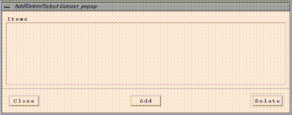
Click on its "Add" button, and an EDSS file browser should appear:
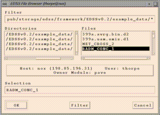
(this may take a couple seconds). The file browser has a "Filter" widget at the top. You can see the files in a particular directory by typing or pasting in the directory name and adding a "/*" at the end and hitting return. Alternatively, you can navigate through the directory structure by double clicking on directories in the Directories list (or single clicking and hitting return). Once you get to the directory that contains the file you want, you can select the file by clicking on it in the Files list.
Use the file browser to add the file
"<top level PAVE directory>/example_data/RADM_CONC_1"(If RADM_CONC_1 is not available, choose any dataset in the directory.) This will become PAVE's dataset "a", and this will be the currently selected dataset. Do the same with<top level PAVE directory>/example_data/399a.uam.emis.d1which will become dataset b.There may be several other example datasets in <top level PAVE directory>/example_data that you may want to play around with, although some may be missing due to disk space considerations:
-rw-r--r-- 1 thorpe edss 8549788 Aug 17 09:26 399a.avrg.bin.d2 -rw-r--r-- 1 thorpe edss 1070068 Aug 17 09:27 399a.uam.emis.d1 -rw-r--r-- 1 thorpe edss 11870588 Aug 17 09:29 MET_CROSS_2 -rw-r--r-- 1 thorpe edss 11870584 Aug 17 09:30 RADM_CONC_1 -rw-rw-r-- 1 thorpe edss 7871036 Aug 17 09:32 bot_west_chem_ec1_g0 -rw-r--r-- 1 thorpe edss 201048 Aug 17 09:32 exact1- After adding the dataset, you should see a "Species List" window:
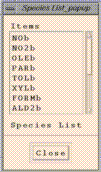
This should now be displaying the species available in dataset b, the currently selected dataset.
- Go back to the "Add/Delete/Select Dataset" window and "Select" the first dataset (denoted by "a") by clicking on it. This now becomes the currently selected dataset, and you should now see that dataset's available variables in the "Species List" popup. Click on "HOa" to add that variable to the available formulas list.
- You should see an "Add/Delete/Select Formula" window:
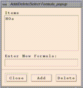
Add item "HOa+HO2a" in the "Enter New Formula:" typein box and click on "Add". Add "NOb" and "O3a" as well. You now have a total of four formulas added to your formula list, and O3a is the currently selected formula.
- When PAVE window is up, select the following sequences from the menu bar at the top of PAVE window:
"Graphics/Create Tile Plot" 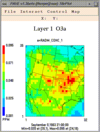 "Graphics/Create 3d Mesh Plot" 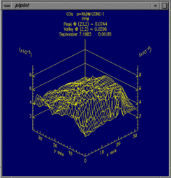 "Graphics/Create Time Series Line Plot"NOTE: All the plots above are associated with the selected formula, which is probably O3a. The selected formula can be modified with the "Formulas menu/ Edit/Select from Formula List" window."Graphics/Create Time Series Bar Plot" 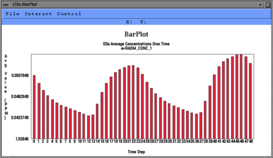
The tile plot and mesh plot show data for the selected region at a particular time step, and can be animated to show other time steps. The time series line and bar plots show data averaged over the selected region at each time step. Here are some things to try with the plots:
- If you want to adjust a tile plot's legend min/max cutoffs, choose "Control/Configure" from the plot's menu bar.
- If you want to animate a tile plot over time, select the "Control/Animate" menu item on a tile plot. This brings up a window from which you can start the animation.
- If you want to animate all existing tile plots synchronously, select the "Graphics/Animate Tile Plots Synchronously" menu item from the main PAVE window. This presents a window that you can use to start the animations.
- When using a slider (such as in the Animate window for Tile Plots), to scroll by one time step in either direction, click on the slider itself and then use the left and right arrow buttons on the keyboard.
- Select "Formulas/Select Region of Interest Matching Current Formula" from the menu bar. The domain window associated with the selected formula will be displayed.
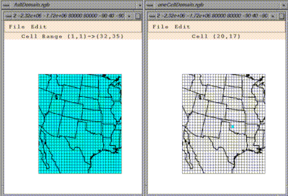
By default, the entire domain is selected for any dataset/formula loaded into PAVE. This is indicated by a light blue background on all of the cells in the domain window. You may want to do a time series of a single cell, or perhaps a tile plot of a smaller region of cells. To subselect a region, just left-click-and-drag over any blue areas to deselect cells, and conversely over any white areas to select cells. Also, you can use the Edit menu's "Select All" and "Select None" items to turn all the cells in the domain on or off. Subsequent plots will show data only from the subselected region.
This window can be closed using the File menu's "Close" item. Also note the File menu's "Save Domain To File" and "Load Domain From File" menu items that allow you to save and later retrieve frequently used domain subselections.
- How to add a remote dataset: If you have followed the optional instructions under point 3. of the Requirements to use PAVE section of this document, you can add remote datasets using the file browser provided to choose datasets. Select "Datasets/Edit/Select from Dataset List" from the menu bar. An Add/Delete/Select Dataset window will appear. Click on the "Add" button, and an EDSS file browser should appear (this may take a couple seconds). Now click on the large button in the center of the file browser that contains "Host:", "User:", and "Owner Module:" information. This brings up a "host selector" window in which you can enter the remote host name (e.g. sequoia.nesc.epa.gov). Clicking on Select should then enable you to browse for files on the remote machine, starting from your home directory.
- NOTE: If you want to do a vector plot, a scatter plot of two formulas, or a time series line plot with multiple (2-8) variables plotted on it, then you must send commands to PAVE via stdin or command line arguments, which are described in the "Driving PAVE using scripts" section of this document. Unfortunately there are currently no graphical user interface methods to access these features. There are examples of invoking PAVE with command line arguments in the same section.
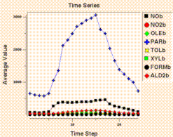 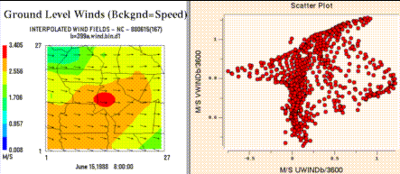
- Explore the menu items available to you from tile plot windows.
- The background map can be toggled between county boundaries, medium (the default map) or high resolution state boundaries, rivers, or roads.
- Tile plots can be printed, or saved as PostScript, XWD, RGB, or Gif images.
- You can zoom in on, probe the data values in, and generate time series plots for specific regions of tile plots.
- To view a vertical cross section of data using the Tile Plot, first click on the dataset for which you would like to view the cross section. Then under the datasets menu, choose "Select Layer Ranges Matching Current Dataset". You should see a window with sliders for the highest and lowest layers to use. Set these appropriately depending on which layers you want to see. To see a vertical cross section, the lowest and highest should be different layers (as opposed to just plotting a horizontal cross section - in that case the min and max layers are set to the same value). [Note that you can also select a layer range for a formula using the corresponding options under the Formulas menu.]
After selecting the layers you want to see, type a statement of the following form into PAVE's standard input:
-subdomain 80 20 80 90Here the arguments to -subdomain are: x1 y1 x2 y2 to define the region to be selected. This will cause the data where x = 80, and y is between 20 and 90 to be selected. To see this region on the screen (and/or to set this region using the User Interface rather than a command line option), you can choose "Select Regions of Interest Matching Current Dataset". A window showing the domain will come up. Alternatively, you can select the cells with the mouse, but this gets difficult when grid cells are small and you want to select a very precise area.
Now that the layers and region to be plotted are selected, you need to set the cross section type. Under the Graphics menu, choose "Set Tile Plot Cross Section Type" and you will see a submenu of X, Y, or Z cross sections. To make a plot for the above example choose "X Cross Section" (remember this by noting that x is constant). Next, draw the plot for a formula using that dataset by choosing "Create Tile Plot" from the Graphics menu, and you will see the plot of that cross section.
- Explore the rest of the menu items not documented above & enjoy!
The UNC Institute for the Environment BugZilla has been out of service for quite some time. For bugs and comments, please use https://github.com/cjcoats/pave-3.0
- In versions prior to PAVE 2.1, the PAVE formula parser was not smart enough to determine the difference between plotting TA for dataset n (TAn) and using the tan function. Similar problems might occur with the combination CO and s. Workaround: make your dataset use a different letter.
- If the file .pave_exe.pave_usage.log is not writable by the user, versions prior to 1.5 would print out some information and then crash with a segmentation fault or a memory fault. PAVE 1.5 gracefully exits and gives a meaningful error message.
- In versions prior to PAVE 2.1, Mesh plots didn't display on some non-8 bit graphics displays. This problem has been solved by using convert from ImageMagick. For PAVE 1.7 and below the problem occurred on non-8 bit graphic displays (e.g. a DEC 5000 X-Server, some SGIs, Linux machines, some Windows machines). Workaround (for versions prior to PAVE 2.1.0): set your display to use 8 bit graphics. On Windows machines this can be done by configuring your display Color Palette to use 256 colors. On Linux, the X-server can be started with an 8 bit depth using startx -bpp 8.
- Probing in vector plots causes PAVE to crash in version 1.7 and earlier. This is fixed in version 1.7.1.
- On Linux, "Close" buttons do not work properly for some windows.
Workaround: close the windows using the window manager decorations.
- Time series plots over a region do not work if all of the data in the selected region is missing for one of the selected time steps.
- PAVE sometimes prints a message like
and runs out of colors to use.Can't allocate ramp color 214
Workaround: exit PAVE, exit out of any other applications running on your X-display that are using lots of colors (AVS, drawing/painting programs, etc), and then get back into PAVE. If you were running netscape, try restarting it with the option -ncols 64 to limit the number of colors it uses.
- Occasionally when saving tile plot images to data files, the menus "disappear" from the tile plot. They are still active however they are "invisible".
Workaround: iconify the tile plot, de-iconify it, and you should be able to see the menus again.
- Printing tile plots may not work reliably on the Sun platform at this time, for reasons unknown to us. Workaround: save your images as Gif or RGB, convert them to PostScript (see the Saving PAVE Plots to PostScript section for more information on this), then print them.
- The non-default maps in PAVE are a bit slow to generate, especially the first time you create a plot with a given map projection. We hope to speed up the map generation process with future versions of PAVE.
- If you choose "File/Exit" and PAVE does not shut down, there may be a mesh plot or time series line plot still running that prevents PAVE from exiting. Workaround: locate any line or mesh plot windows that you have created, and quit out of them before exiting PAVE.
- Miscellaneous memory leaks.
Workaround: If you run PAVE for a large number of plots and you notice performance degradation, exit out of PAVE and then restart it.
- In PAVE 1.4.x, PAVE could export netCDF files, but had trouble reading them back in if the exported formula was at all complex. This is corrected in version 1.5. See New Features in PAVE 1.5 for more details.
- In versions prior to PAVE 1.5, the column numbers in tabbed ASCII files output from PAVE were sometimes incorrect. This has been corrected in PAVE 1.5.
- In versions prior to PAVE 1.5, if you use the tile plot Control..Time Series menu item to generate a time series plot from a tile plot that was generated by first selecting a subdomain, PAVE may not show the correct data.
Workaround: (1) Download the latest PAVE; (2) Use this menu item only from plots that are not on a subdomain - zoom in on the subdomain instead and then generate the plot; (3) select the subdomain for which you want the time series plot and choose Create Time Series Line Plot from the Graphics menu to create the plot.
- In versions prior to PAVE 1.5, creating a time series plot from the Graphics menu when there are multiple layers of data selected generates a plot for the top data layer only, instead of for the data averaged over the selected layers. Version 1.5 reports an error message if the user requests a time series plot over multiple layers.
- In versions prior to PAVE 1.5, there was a bug reading UAM-IV wind files. This has been corrected in PAVE 1.5.
Malloc failure: If PAVE prints or pops up a message of the formmalloc failureorVIS_DATA_Dup() failedthis means that PAVE has run out of usable memory while trying to perform the requested operation. To make more memory available, try closing some plots or quit and restart PAVE.Can't allocate ramp color xxx: If PAVE prints a message about not being able to allocate a color that means that all available colors for the current session on your system have been used up. Applications like netscape will use as many colors as possible. To keep more colors available to applications like PAVE, try running netscape with the option -ncols 64 to prevent it from getting all the colors. This problem may also occur if you've selected a lot of different color schemes during your current PAVE session. To get all colors in the desired color scheme try quitting and restarting PAVE after you've chosen the scheme that you like. Also, logging out of your current session and logging back in should make the maximum number of colors available.
The pave script now responds to the environment variable KILL_PROCESS_GROUP. If KILL_PROCESS_GROUP is set to ON (which is the default behavior in the pave script), then all processes started by PAVE during the session (e.g. time series plots) will be killed when PAVE exits. However, we have found that on Linux, if PAVE is being run from a script the parent script is also killed. Therefore, you may wish to do setenv KILL_PROCESS_GROUP OFF before running PAVE on Linux - especially if you are using scripts.
The pave script now reponds to the environment variable LOCAL_FILES_ONLY. If LOCAL_FILES_ONLY is set to ON (the default value is OFF), PAVE will execute without running the software bus. This is useful when running from scripts because you can run multiple instances of PAVE from the same user account. A limitation is that when LOCAL_FILES_ONLY is ON and you are running PAVE in interactive mode, we have been unable to get the local file browser to communicate back to PAVE properly when new files are added. However, files that were added in prior sessions or via the command line may be analyzed.
The pave script now reponds to the environment variable PAVE_DEBUG. If PAVE_DEBUG is set to ON (default is OFF), then the script prints some debugging information about the various paths used when PAVE is executed. This is useful if you are having problems getting PAVE or one of its components to work. You can turn this on by doing setenv PAVE_DEBUG ON before running PAVE.
- A set of new command line arguments was added that control whether various parts of tile plots are drawn. You may find this useful when placing PAVE outputs in other documents. Note that the syntax to prevent the drawing of titles was already in earlier versions of PAVE - just give a string of spaces as the argument for the title command line arguments (e.g. -titleString " " -subTitle 1 " " -subTitle2 " "). The new commands to control whether the other parts of the plot are drawn are:
-drawLegend ON|OFF -drawMinMax ON|OFF -drawTimeStamp ON|OFF -drawTiles ON|OFF -drawGridLabels ON|OFFA new command line argument -onlyDrawLegend ON|OFF was added. In this case, you'll get a plot for which only the legend is drawn. This is useful if you want to place the legend in another document. You can crop this plot when exporting images using scripts by using the -imageMagickArgs command line option.
The command line argument -imageMagickArgs 'args' was added. When used, this command line argument will pass the contents of args to the convert program that is called when images are converted from X-window dumps to other image formats. For more information on the command line arguments for convert, see the ImageMagick documentation (available from http://www.imagemagick.org).
PAVE now responds to the environment variable ELLIPSOID to specify the earth's ellipsoid. See Environment Variables page for more information.
You can now specify the radius of the earth and treat the earth as a spher using the environment variable SPHERICAL_EARTH. See Environment Variables page for more information.
Updated COPYRIGHT info to GNU Public License.
Removed references to MCNC.
PAVE by MCNC is no longer put on plots by default.
The map region is no longer preclipped by default.
Added PNG as a format to which images can be exported.
PAVE now kills BLT and other child processes upon exit. This works for Interix, but should be tested more thoroughly on other platforms.
The limitation on the maximum number of timesteps was removed. Now annual hourly files can be analyzed.
Updated Makefiles to have more utility.
Corrected problem with very large and small numbers changing to scientific notation then causing problems in formulas.
- All of the new features available in 2.1.0 are noted on the pave -usage command with <NEW!!>
[ -alias <aliasNAME=definition> (NEW)!!!] [ -animatedGIF <filename>(NEW!!!)] [ -minMaxModelObs <col> <row> <radius> <formula1> <formula2> (NEW!!!) ] [ -minMaxObs <col> <row> <radius> <formula1> <formula2> (NEW!!!) ] [ -multivarNcf <formulaList> <varList> <fileName> (NEW!!!) ] [ -nHourAverage <nhours> (NEW!!!)] [ -nHourSum <nhours> (NEW!!!)] [ -nLayerAverage (NEW!!!)] [ -nLayerSum (NEW!!!)] [ -obs <formula> (NEW!!!) ] [ -obsIdTable <filename> (NEW!!!) ] [ -obsSize <size> (NEW!!!) ] [ -obsThick <size> (NEW!!!) ] [ -obsTimeSeries (NEW!!!) ] [ -printAlias (NEW!!!) ] [ -save2ascii <filename> (NEW!!!)] [ -save2ncf <filename> (NEW!!!)] [ -subTitleFont <fontSize> (NEW!!!)] [ -titleFont <fontSize> (NEW!!!)] [ -ts <time step> (NEW!!!)] [ -tzoffset <Timezone offset> (NEW!!!)] [ -tzset <in Timezone> <out Timezone> (NEW!!!)] [ -unalias <aliasname> (NEW!!!) ] [ -vectobs <formula> <formula> (NEW!!!) ]- Aliasing of complex formulae PAVE has been modified to allow for the aliasing of complex formulae, with the use of hierarchical formulas allowed. Alias definitions are saved in a .pave.alias file, and will be reloaded in future executions of PAVE. -printalias allows the user to view the alias definitions. This will improve the overall ease of complex formula definitions.
- Write animated GIFs directly PAVE was modified to output animated .gif files within version 2.1.0 using the -animatedGIF <filename>, as an option to the previous MPEG choice.
- Added capability to write multiple variables to a single netCDF file. PAVE was modified to write out multiple variables, given by different formulae to the same netCDF file using -multivarNcf. Previous versions of pave allowed the user to write out a variable given by a formula to a netCDF file.
- Calculate the n-hour average and/or sum, -NhourAverage -NhourSum.
- Calculate the n-layer average and/or sum, -NlayerAverage and -NlayerSum.
- PAVE is able to visualize standard AIRS AMP350 observational data, allowing observations to be probed -obs, observations to be plotted via time series -obsTimeSeries, and the overlay of wind vector observations -vectobs. The user is able to configure these plots using the GUI and the command line options -obsSize, -ObsThick. Additional options include -minMaxObs, -minMaxModelObs. The AIRS2M3 program has been added to the I/O API Related Programs to read pollutant monitor values from an AIRS AMP350 file, convert to PPM, and output the result to an I/O API "observational-data" file.
- Supports user adjustment of time stamp to account for desired time zones, -tzoffset
- Allows conversion from the native time zone to the user desired timezone, -tzset
- Allow the export of ASCII and netCDF files using the scripting interface PAVE was modified by adding the command line arguments: -save2ascii, and -save2ncf
Previous versions of pave allowed the export of ASCII and netCDF files only through the graphical user interface (GUI).
- An unlimited number of species can now be used within formulas. PAVE was modified to allow for an unlimited number of species to be specified within formulas. Previous versions of PAVE had a limit of 30 species that could be included in the formula through the user interface. Users had a need for formulae with a greater number of species.
- Update formulas after deleting datasets. PAVE was modified so that formulas for subsequent data sets are not deleted when earlier data sets are deleted. For example suppose you have three open PAVE datasets: a,b,c. In earlier versions of PAVE if you have O3a, O3b, O3c in the formula list, and then delete dataset 'b', using the Add/Delete/Select Dataset window you would lose the formula O3b and also the formula O3c. PAVE 2.1.0 now automatically moves the formula from variable "O3" in data set "c" to "O3" in dataset "b", once dataset b has been removed.
- Bug fix - Prior to PAVE 2.1.0 the formula parser was not smart enough to differentiate between Variable names and arithmetic operator names. Example: plotting TA for dataset n (TAn) and using the tan function.
- The numerical divisions between the color bins to be controlled by the user. In earlier versions of PAVE, the divisions between the color bins were calculated automatically based of the specified minimum value, maximum value and the number of bins used. The range of each bin was the same. For example, each bin might be 10 PPB of ozone, or 1 m/s. Users can now control the bin divisions by setting the environment variable LEGEND_BINS or the command line argument legendBins to a comma separated list that contains the divisions between the bins. The advantage of the command line argument is that you can change the values of the bins during the PAVE session. After using the legendBins command line argument, you can set the bin determination to use the default method by entering -legendBins DEFAULT. The following example causes a plot to be drawn with three colors with values in the ranges 1-10, 10-100, and 100-1000:
setenv LEGEND_BINS "1,10,100,1000"- On SGI 64 bit capable computers, files larger than two gigabytes can now be displayed. This is done using a 64 bit capable "visd" on the SGI, which then transfers the selected data to the main PAVE interface. The only restriction is that amount of selected data must be less than 2 Gbytes. If the main PAVE program is being executed on the SGI that holds the large data files, PAVE can be forced to use the visd to read data files if the user sets the environment variable USE_LOCAL_VISD. This should not be set unless large files are being visualized because it is slower than reading a local file directly. If the large file is being browsed remotely and resides on a 64 bit capable SGI, the 64 bit capable visd will be started by default (if it is installed). Examples of 64 bit capable SGIs are Octanes, O200s, and O2000s. Some O2s are 64 bit capable, and some are not.
- County and state lines can be displayed in different colors (gray / black) if the environment variable PAVE_DISTINCT_STATE_COUNTIES is set. This will occur when the user selects "Counties (SLOW the first time)" from the Tile window plot's Map menu. The different color state and county lines can be obtained when using a script by issuing the -mapCounties command line argument and setting PAVE_DISTINCT_STATE_COUNTIES. Note that after the two color county map has been displayed, it may not be possible to switch to another map during the same PAVE session.
- Vector plots and vector tile plots have a "vector legend", which will be turned on if the user selects "Scale Vectors" from the Configure window. The value of the Vector Scale type-in from the same window represents the length of the vector legend and the rest of the vectors are scaled accordingly. This makes the Vector Scale more meaningful than in previous versions, although the behavior is somewhat opposite (i.e. the larger the Vector Scale, the smaller the vectors because the legend is always the same size).
- Vectors can be drawn with a user specified color. This option is controlled by setting the VECTOR_COLOR environment variable to any color name recognized by the X-Windows system. Potential colors and RGB values are usually found in /usr/lib/X11/rgb.txt for non-Suns or /usr/openwin/lib/X11/rgb.txt on Suns.
- Handling of missing data and time steps other than 1 hour for I/O API files is improved. Data in I/O API files with values less than or equal to AMISS3 (-9.0E36), such as BADVAL3 are now treated as missing data. This means that no color is assigned on tile plots and values are treated internally as the IEEE constant for "Not a number". Also, it is now possible to export netCDF files with time steps other than 1 hour, and a more current version of the I/O API is used.
- Animations are now synchronized based on their times, not their time steps. If Animate Tile Plots Synchronously was chosen in previous versions of PAVE, the first time step of each file was shown followed by the second, etc. In the current version, the system examines the actual time the data corresponds to an animates the plots synchronously.
- Problems with saving multiple screen captures from a script using %02d have been corrected. In prior versions, there was a problem when the user tried to save GIF files for all time steps of a dataset from a script using the syntax
-tinit 0 -tfinal 12 -gtype tile -saveImage GIF /tmp/test%02d.gif
- Corrections were made to visualizing some UAM-IV and UAM-V files. In earlier versions, UAM-IV boundary files were not visualized properly unless the number of grid cells in the X & Y directions were the same. Also, version 1.7.1 supports the visualization for pressure in UAM-V height/ pressure files, and cwater in UAM-V cloud/cwater files whereas in earlier versions only the height and cloud variables were available, respectively.
- Commands entered from standard input now support single and double quotes, thus allowing strings such as titles with multiple words to be passed directly to PAVE from standard input.
- Window management with command line arguments is improved. The -windowId command line argument now returns the X-window ID of the most recently created window. The time step displayed by a window can be controlled using the -showwindow windowId timestep command line argument. A window can be closed with the -closeWindow windowId command line argument. A window can be raised (brought to the front) with -raiseWindow windowID.
- The maximum number of timesteps for a dataset has been increased such that a datasets with up to 120 days of hourly data can be visualized.
- The Linux version no longer gives errors about "XmDeleteIemsPos", and is statically linked so external libraries are not needed.
- The Solaris file browser can now display remote files.
- The rare cases when map lines would extend below the visualization area or black boxes would appear over the date/time information have been fixed, and a bug that occurred when map lines had more than 2500 vertices has been corrected.
- It is possible to hide the "PAVE by MCNC" string on PAVE plots (e.g. for publication purposes).
- Up-to-date I/O API and netCDF libraries were used. This corrected a problem with reading the data from netCDF files on HP-UX.
- PAVE no longer leaves Browser processes running after it is exited.
- When you zoom in to a region, the region plotted always shows a whole number of grid cells (before, partial cells could be plotted and probing at the edge of the plot caused an error message).
- DEC OSF version is compiled with native C and C++ so that missing data (represented as NaN - Not a Number) is treated correctly
- The configure window was made smaller so that it can be displayed on a 1024 x 768 PC monitor.
- Vector plots now display all vectors by default.
- A slider has been placed on the Configure window to control how frequently vectors are plotted
- Command line options were added: -vectorScale real# controls the scale of the vectors, -vectorPlotEvery integer (=N) plots every N vectors.
- A bug in time series plots has been corrected.
- IRIX 6.x is now supported by the PAVE script.
- A script pavewin that starts PAVE in its own window is now included.
- A bug that caused pave to crash when time series plots were attempted on formulas with division has been corrected.
- CONNECTION TO BUS HAS CRASHED message no longer appears when PAVE is exited normally.
- The user guide has been split into multiple files for faster access from the web.
- I/O API / netCDF boundary files can now be visualized.
- Missing data is now supported in UAM and netCDF files. Areas with missing data are shown in the background color of white. For UAM files, the default value for missing data is -999.0. This can be overridden with the environment variable UAM_MISSING_VALUE.
- The numeric format specified in the configure window for a tile plot is now also used to format the numbers in the tabular display when probing the data.
- Dates with the format YYMMDD are now supported for UAM-IV format files.
- The limit for the length of a formula has been increased to 2500 characters.
There are several bug fixes with this release:
- If you generate a time series plot from the Interact menu for a plot of a subdomain, the correct data is now displayed.
- NetCDF files produced by PAVE using Export to netCDF can now be read back in to PAVE. The default species name for the output variable is
VAR. This can be overridden by setting the environment variablePAVE_EXPORT_VARNAMEto another alphanumeric string. Information about the formula that was exported and the datasets used to create it is stored in theFDESCportion of the netCDF file. This can be viewed using the ncdump utility.
- A bug in the reader for UAM-IV winds has been corrected.
- The column numbers in tabbed ASCII output files has been corrected, and the time stamp labels are now all written on their own lines.
- If the file .pave_exe.pave_usage.log is not writable by the user, the system now gracefully exits and gives a meaningful error message instead of producing a segmentation fault.
- If multiple layers are selected and a time series plot is requested, an error message saying that this operation is not supported now appears. This may be supported at some point in the future.
- A bug was fixed with the world maps which prevented domains that crossed the greenwich meridian from displaying a map.
- A bug was fixed that prevented netCDF "chained" files from being read into PAVE.
- Integer data in netCDF can now successfully be read by PAVE.
PAVE now can display a world map for data which falls outside the North America region. For further information on how to use the world map, please see the PAVE FAQ located at Pave.FAQ.html#WorldMap.
- The following operators have been added to PAVE's formula parser:
Op Name Function -- ---- -------- a < b Less than Returns 1 if a < b, else 0 a <= b Less than or equal Returns 1 if a <= b, else 0 a > b Greater than Returns 1 if a > b, else 0 a >= b Greater than or equal Returns 1 if a >= b, else 0 a == b Equal Returns 1 if a equals b, else 0 a != b Not equal Returns 1 if a does not equal b, else 0 a && b And Returns 1 if a != 0 and b != 0, else 0 a || b Or Returns 1 if a != 0 or b != 0, else 0Please note that PAVE's operator precedence (highest to lowest) is as follows. If you wish to override the precedence given below, or are uncertain as to which operator will take precedence, you can feel free to use parentheses in your formulas. This will force expressions within the parentheses to be evaluated first.
Highest 1) abs, log, sqr, sqrt, exp, ln, sin, cos, tan, sind, cosd, Precedence tand, minx, miny, minz, max, maxy, maxz, mean, min, max, sum, mint, maxt 2) ** 3) /, * 4) +, - 5) <, <=, > >= 6) ==, != 7) && Lowest 8) || Precedence- Variables from UAM and netCDF formatted data files can now be mixed within the same formula, and a suitable map will be produced, provided the variables lie on the same domain and have the same map projection. In addition, minor discrepancies in the precision of the map information associated with the variables will not prevent PAVE from drawing a map in the plots.
- PAVE now "plots" formulas that result in a single number (for example,
mean(O3a)) by sending that single number to the text window, along with information about the time and domain currently selected.
- The data is now labeled much more clearly on all time series plots. The annotations include information on the spatial and temporal subdomin used to get the data for the plot, as well as the datasets used.
- There is now a black frame drawn around a tile plot's color legend. This makes the legend much more readable when white is chosen as one of the colors.
- PAVE now displays "PAVE by MCNC" in tiny letters on tile plots and bar plots.
- There are now several new command line arguments that can be given to PAVE. They are:
-barplotYformat <format string><format string>is a format character string that will be used by sprintf() to draw the y axis labels on bar plots. The default format is %g. NOTE: This option does not work on the IBM platform.
-tileYlabelsOnRight- The
-tileYlabelsOnRightcauses the tile plot's Y axis labels to appear on the right hand side of the plot, rather than the default of the left hand side.
-subTitle1 "<sub title 1 string>"
-subTitle2 "<sub title 2 string>"- The
-subTitle1and-subTitle2arguments allow the user to control a tile or vector plot's subtitles if desired.
-height <tile plot height in pixels>
-width <tile plot width in pixels>- The
-widthand-heightcommand line arguments have been added to PAVE, to allow the user to control a tile plot's width and height in pixels. All subsequent plots will use the supplied value for height/width, until a non-positive value is supplied as a subsequent argument. At that point PAVE's default height/width will be used.
-copyright- The
-copyrightoption prints out copyright information on PAVE itself and the third party "external library" applications that it uses.
-system "<System Command>"- The
-systemoption allows the user to supply a command to be fed to the Unix command line using a call to the system() library routine.
- There are several user interface changes in this version.
- The "close" and "quit" menu items have been removed from the Motif menu accessed from the upper left hand corner of a tile plot window or a time series bar plot window.
- A Tile Plots "Configure..." window has been reorganized to be smaller, in order to fit on smaller displays.
- Several other minor user interface improvements have been made.
- There are several bug fixes in this version.
- A bug with colors and tile plot configuration files has been resolved. Users can now select a configuration file with color information in it, make plots, and then select a configuration file without color information, and the original colormaps will correctly be used.
- Closing a tile plot while it is animating no longer causes PAVE to crash .
- Chained files with greater than one layer no longer cause PAVE to crash.
- Double clicking on the upper left hand corner of the main PAVE window, a tile plot window, or time series bar plot window will now have no effect . Previously, this caused PAVE to immediately crash.
NaN(bogus not-a-number) data in a tile plot no longer causes PAVE to crash. Instead, a warning message is printed to the stderr stream, and no color is plotted in that part of the image.
- PAVE no longer kills all processes in its process group when exiting. This means that parent processes (such as VisDriver or the EDSS Console) will remain alive when PAVE exits. However it also means that any mesh plots will prevent PAVE's completion, until they are quit out of individually.
- Several other minor bugs have been fixed.
/usr/lib/X11/rgb.txtfor non-Suns or
/usr/openwin/lib/X11/rgb.txton Suns.
[MPEG FILE NAME].param
[MPEG FILE NAME].mpg.0000.xwd
[MPEG FILE NAME].mpg.0001.xwd
:
[MPEG FILE NAME].mpg.N.xwd [where there are N+1 frames in the MPEG]
Note that the MPEG animation will be generated regardless of the setting of the "Keep MPEG Input" button.
Parameter files are used by mpeg_encode to generate the MPEG files from a stream of XWD images saved by PAVE. If you want to generate an MPEG file "manually" using mpeg_encode, the command line format is:
mpeg_encode <parameter file name>
For the parameter file below, /home/thorpe/UWINDa2.mpg would be generated from /home/thorpe/UWINDa2.mpg.[0000-0005].xwd.
IQSCALE 6 PQSCALE 6 BQSCALE 6 PSEARCH_ALG LOGARITHMIC BSEARCH_ALG CROSS2 GOP_SIZE 10 SLICES_PER_FRAME 1 PIXEL HALF RANGE 10 PATTERN IBBPBBPBBPBBPBB FORCE_ENCODE_LAST_FRAME BASE_FILE_FORMAT PPM OUTPUT /home/thorpe/UWINDa2.mpg INPUT_CONVERT /pub/storage/edss/framework/EDSSv0.x/IRIX5_mips/bin/OPTIMIZE/public_domain/xwdtopnm * | /pub/storage/edss/framework/EDSSv0.x/IRIX5_mips/bin/OPTIMIZE/public_domain/pnmdepth 255 INPUT_DIR /home/thorpe INPUT UWINDa2.mpg.*.xwd [0000-0005] END_INPUT REFERENCE_FRAME ORIGINAL FORCE_ENCODE_LAST_FRAME
An example of the file format used is as follows:
ColorMapType NEWTON_COLORMAP Legend_Max 0.128 Legend_Min 0.000 Legend_Format %4.3f Number_Labels 5 Invert_Colormap 0 Number_Tiles 8 255 0 0 ColorNumber8 255 147 0 ColorNumber7 218 255 0 ColorNumber6 70 255 0 ColorNumber5 0 255 221 ColorNumber4 0 143 255 ColorNumber3 0 95 255 ColorNumber2 223 223 223 ColorNumber1 Save_MPEG_Files 0 Disable_Map 0 Smooth_Plot 1 Draw_Grid_Lines 1 Scale_Vectors 0
Note the following about the format of the configuration file:
NEWTON_COLORMAP [for Newton RGB (AVS)]
JET_COLORMAP [for Newton RGB (InkJet)]
GREY_COLORMAP [for Grey Scale (AVS)]
Configuration files can be loaded into PAVE sessions in two ways -
using the user interface or from the command line. PAVE's main
window now has a "File... Choose Configuration File For New Tile Plots"
menu item that can be used to select the file. Alternatively, PAVE's
command line arguments or standard input stream can accept input of
the form -configFile <configuration file name>.
Once PAVE loads a configuration file, that information will be
used as the default for all subsequent PAVE plots, until another
configuration file is specified to PAVE.
For example, if a user needs to do the following:
1) save Gif images 2) for the first 13 hours 3) saved to files /tmp/test00.gif .. /tmp/test12.gif 3) of variable UWIND 4) from dataset /home/thorpe/example_data/399test.wind.bin.d1 5) with smoothly colored background (as opposed to tiled) 6) with a contour range of -4000 to +4000 7) from a script, quitting PAVE upon completionThe following script would do the job:
#!/bin/csh setenv SMOOTH_PLOTS 1 pave \ -f /home/thorpe/example_data/399test.wind.bin.d1 \ -s UWINDa \ -contourRange -4000 4000 \ -tinit 0 -tfinal 12 -gtype tile -saveImage GIF /tmp/test%02d.gif \ -quit
There are a number of new features in this version that you may find useful, including:
- User controllable unit labels
- The default color map for tile plots has been improved
- MPEG animations can now be saved under Solaris 2.5
- The IBM version has been upgraded from AIX3 to AIX4
- Several bugs that caused crashes have been fixed
- Saving RGB, PostScript, XWD, and Gif images
- Saving MPEG animations
- On-the-fly map projections, which enables any netCDF dataset conforming to the M3 I/O API standard to be handled by PAVE
- Several maps can be toggled between, including low and high resolution state boundaries, rivers, roads, and county boundaries.
- Reading datasets that are spread across multiple files
- Exportation of netCDF Models-3 I/O API data files
- Saving/retrieval of selected geographic domains
- Select All/Select None features in the region of interest selection boxes
- Printing directly from a PAVE tile plot
- Multiple time series (1-8) can now be overlaid on the same plot
- The min/max for the displayed data is shown on tile plots
- Command line arguments for many of the above features
PAVE is no longer supported by CMAS; its distribution is now currently done by Carlie J. Coats, Jr., on an un-funded personal basis, for the good of the environmental modeling community and because it is more accessible than many alternatives, and can be adapted to support huge data sets (unlike some of the alternatives).Return To Table of ContentsPAVE is now widely used by the Air Quality Modeling Community. We are appreciative of the communities contributions and adoption of this visualization product. We are seeking to pool together funding to support requests for enhancements and bug fixes from multiple groups to enable the continued support of this product. If you or someone you know is interested in some of these features and if you are able to provide funding, or ideas about how to obtain funding to continue development, please contact me via email carlie@jyarborough.com.
Some of the features CMAS would have liked to add, as of version 2.3, are listed below. If you know of additional features that the community would benefit, please contact me as described above.
- Support CF-format netCDF
- Update external software
It would be a good idea to update PAVE to use the most recent versions of BLT for time series plots, Tcl/Tk, and PLPLOT.
Done, at least partially, for
pave-3.0.
- Update MPEG generation to use ImageMagick
Currently the MPEG generation uses an old technique. It would be good to update this to use ImageMagick to generate MPEGs as well as the other formats.
- Fix Lesstif issues of window placement and closing
Currently, when Lesstif is used, some of the default windows don't come up in the correct positions and the Close buttons don't work properly.
Now uses OpenMotif. Done, forpave-3.0?
- Improved statistical capabilities
People often want to use simple statistics to assist with their data analysis (e.g. mean, std. dev.). It would be good if PAVE could produce these. In addition, people may want to slice the data in different ways to obtain these statistics (e.g. mean for each time step or for each vertical layer). There are also a number of commonly used statistics that deal with comparing model data with observations. We may want to examine the "tables" generated for OTAG for ideas for other typically used statistics.
- Properly visualize polar stereographic and other data
Only limited testing has been done using PAVE with the polar stereographic map projection. More testing is required, and any bug fixes should be implemented.
Done, for
pave-3.0. Also added support (as yet relatively un-tested) for Albers Equal Area and Transverse Mercator projections.
- Add new types of plots and options for existing ones
Additional kinds of plots have been requested by users. Some examples include: vertical cross section plots where the size of the layers is proportional to actual layer size, vertical profiles, contour plots, flux plots, observational data plots described above, PIG plots, nested grid plots, adaptive grid plots, box & whisker plots. Also, making scatter plots internal to PAVE would help reduce the problems associated with transferring data to BLT and would provide additional flexibility.
- Improve use of map backgrounds
It would be useful to be able to plot multiple maps (e.g. state + counties, or counties + roads) using different colors and thicknesses as needed. Another possibility would be to allow backgrounds generated by packages such as GISs to be displayed - these might show roads, water, cities, etc.
New maps addedfor
pave-3.0.
- Increase configurability of plots
It would be useful in some cases to allow users to define the cutoffs between the colors plotted (currently PAVE makes each bin of equal size from the min to the max). Another alternative might include assigning bins according to percentiles. Additional configuration options could be added to vector plots wrt the density of the vectors plotted.
- Improve plot labeling & layout
The density and location of grid cell numbering on tile plots and in the domain selector could be improved. Also, the legend could be outlined in black to set off any white or light values and be positioned relative to the size of the legend labels. The size of tile plots could be made user configurable, and the aspect ratio preserved when the plot is manually resized. Data plotted on time series plots could be labeled more clearly.
- Optimize PAVE performance and memory usage
PAVE performance, both CPU and memory related, can be improved in a number of ways. For example, loops can be reordered to reduce paging to disk, memory leaks can be plugged, and memory can be reused in some formulas.
Done, for
pave-3.0.
- and many more...
Return To cjcoats.github.io
$Id: PaveManual.html 87 2018-03-14 13:34:05Z coats $
Send comments to
Carlie J. Coats, Jr.